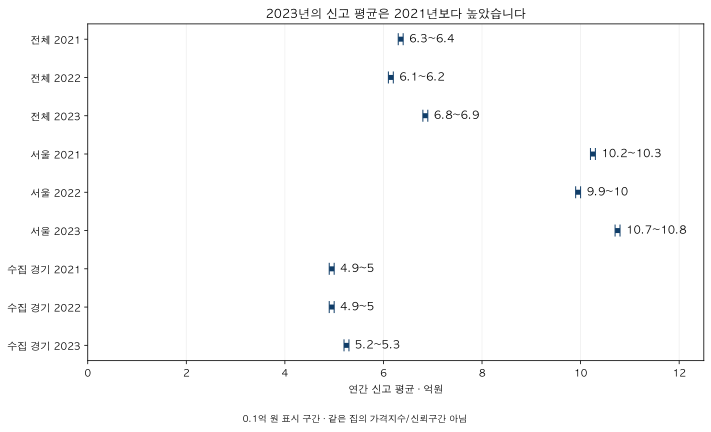
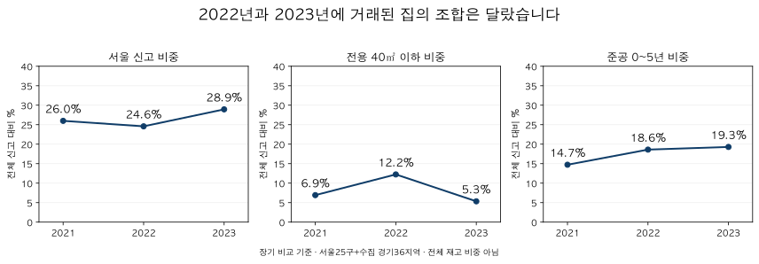
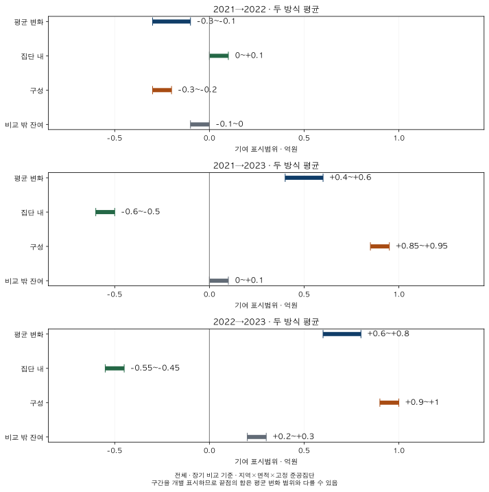

거래량과 시장 읽기 · 하락기 거래 구성
하락기에 팔린 아파트는 어떤 집이었나? 2021~2023년 거래 구성 비교
서울·수집 경기의 2021~2023년 지역·가격·면적·연식별 신고 구성을 비교합니다. 고정 집단으로 나눈 평균 변화와 2023년 반등, 해제·직거래 포함 기준에 따라 달라지는 결론을 함께 확인합니다.
분석 기간 · 2021~2023 · 연간 신고 구성과 세 기간 비교 | 보유 자료 스냅샷 생성 · 2026-10-04
하락기에 거래가 줄었다면, 그때 신고된 집도 평소와 같았을까요? 서울·수집 경기의 2021~2023년을 비교하면 2022년에는 작은 면적과 준공 0~5년 집의 신고 비중이 높아졌고, 2023년에는 서울의 비중이 커졌습니다. 평균가격을 읽으려면 가격 자체의 변화와 함께 그해 거래된 집의 조합을 봐야 합니다.
어느 하락기와 어떤 거래를 비교했나요?
2021년을 앞 시점으로 두고 2022년과 2023년의 연간 신고를 비교합니다. 2022년 하반기와 2023년 상반기의 하락만 잘라 낸 표는 아닙니다. 한국은행 2023년 연차보고서는 주택매매가격의 상반기 하락과 하반기 상승을 구분합니다. 같은 보고서는 전국 공동주택 실거래가격 기준의 2023년 연중 상승도 별도로 설명합니다. KB의 당시 시장 점검도 2022년 하반기 위축과 2023년 하반기 반등을 짚습니다.
대상은 현재 서울 25구와 수집 경기 36지역입니다. 인천과 미수집 경기 지역은 포함하지 않습니다. 전체 재고의 집 수가 아니라 해당 기간 신고된 계약을 한 건씩 세며, 같은 집의 반복 신고도 각 계약으로 들어갑니다. 계약연도를 사용하므로 신고가 접수된 연도별 통계와도 다를 수 있습니다.
주 분석의 ‘장기 비교 기준’은 유효한 금액·전용면적을 가진 비토지임대부 신고를 사용하고 해제·직거래 표시를 유지합니다. 이를 제거한 결과도 나란히 둡니다. 완료된 매매만의 통계나 중개거래만의 통계라고 읽지 마세요. 특히 직거래 구분은 2021년 11월부터 있으므로, 그 이전에 표시가 없다고 직거래가 없었다는 뜻은 아닙니다.
| 지역·연도 | 장기 기준 건수 | 장기 기준 평균 | 표시 제외 건수 | 표시 제외 평균 |
|---|---|---|---|---|
| 서울·수집 경기 전체 2021 | 162,961 | 6.3~6.4 | 154,963 | 6.3~6.4 |
| 서울·수집 경기 전체 2022 | 48,951 | 6.1~6.2 | 41,356 | 6.2~6.3 |
| 서울·수집 경기 전체 2023 | 118,637 | 6.8~6.9 | 107,255 | 6.9~7 |
| 서울 2021 | 42,350 | 10.2~10.3 | 40,635 | 10.2~10.3 |
| 서울 2022 | 12,034 | 9.9~10 | 9,675 | 10.4~10.5 |
| 서울 2023 | 34,333 | 10.7~10.8 | 30,827 | 10.9~11 |
| 수집 경기 2021 | 120,611 | 4.9~5 | 114,328 | 5~5.1 |
| 수집 경기 2022 | 36,917 | 4.9~5 | 31,681 | 4.9~5 |
| 수집 경기 2023 | 84,304 | 5.2~5.3 | 76,428 | 5.2~5.3 |

지역·면적·연식은 어떻게 달라졌나요?
장기 비교 기준의 전체 신고는 2021년 162,961건, 2022년 48,951건, 2023년 118,637건입니다. 비중이 커져도 실제 건수가 늘었다는 뜻은 아닙니다. 2022년 준공 0~5년 신고는 2021년보다 적지만 전체 신고가 더 크게 줄어 그 비중은 높아졌습니다.
2023년에는 서울의 비중이 커졌습니다
전체 신고 중 서울 비중은 26.0% → 24.6% → 28.9%입니다. 서울과 수집 경기의 평균 수준이 다르므로 이 비중 변화만으로도 전체 평균에 영향을 줄 수 있습니다. 아래 지역 합계에 이어, 글 끝에서는 서울 25구와 수집 경기 36지역의 원래 행을 모두 확인할 수 있습니다.
| 지역 | 2021 | 2022 | 2023 |
|---|---|---|---|
| 서울 | 42,350건 · 26.0% | 12,034건 · 24.6% | 34,333건 · 28.9% |
| 수집 경기 | 120,611건 · 74.0% | 36,917건 · 75.4% | 84,304건 · 71.1% |
작은 면적의 비중은 2022년에 높았고, 2023년에는 낮아졌습니다
전용 40㎡ 이하 비중은 6.9% → 12.2% → 5.3%입니다. 반대로 75㎡ 초과~85㎡ 구간의 비중은 2022년보다 2023년에 높습니다. ‘하락기에는 작은 집만 거래됐다’처럼 세 해를 하나의 방향으로 묶기 어렵습니다.
준공 0~5년 비중은 두 해 모두 2021년보다 높습니다
준공 0~5년 비중은 14.7% → 18.6% → 19.3%입니다. 여기서 연식은 각 계약연도에서 준공연도를 뺀 값입니다. 시간이 지나면 같은 집도 다른 연식 구간으로 이동합니다. 아래 가격 분해에서는 이 이동을 피하려고 2021년에 고정한 준공집단을 사용합니다.
| 집단 | 2021 | 2022 | 2023 |
|---|---|---|---|
| 40㎡ 이하 | 11,290건 · 6.9% | 5,992건 · 12.2% | 6,338건 · 5.3% |
| 75㎡ 초과~85㎡ | 58,422건 · 35.9% | 16,401건 · 33.5% | 46,296건 · 39.0% |
| 0~5년 | 24,003건 · 14.7% | 9,109건 · 18.6% | 22,886건 · 19.3% |
| 11~20년 | 54,252건 · 33.3% | 12,970건 · 26.5% | 31,236건 · 26.3% |

어느 가격대의 비중이 달라졌나요?
3억 원 이하 신고 비중은 2022년에 2021년보다 높아졌다가 2023년에 낮아졌습니다. 3억 원 초과~6억 원 구간의 비중은 두 해 모두 앞 해보다 높습니다. 이 표는 그해 실제 신고된 금액으로 구간을 나눕니다. 집값이 달라져 같은 집이 다른 가격대로 이동하는 효과와 거래된 집의 차이가 함께 들어갑니다.
| 신고 금액 | 2021 | 2022 | 2023 |
|---|---|---|---|
| 3억 이하 | 38,886건 · 23.9% | 12,582건 · 25.7% | 18,472건 · 15.6% |
| 3억 초과~6억 | 57,976건 · 35.6% | 19,018건 · 38.9% | 49,973건 · 42.1% |
| 6억 초과~9억 | 37,392건 · 22.9% | 9,704건 · 19.8% | 27,087건 · 22.8% |
| 9억 초과~12억 | 13,253건 · 8.1% | 3,483건 · 7.1% | 10,468건 · 8.8% |
| 12억 초과~15억 | 6,973건 · 4.3% | 1,701건 · 3.5% | 5,428건 · 4.6% |
| 15억 초과~20억 | 미공개 | 미공개 | 미공개 |
| 20억 초과~25억 | 미공개 | 미공개 | 미공개 |
| 25억 초과~30억 | 미공개 | 미공개 | 미공개 |
| 30억 초과~40억 | 미공개 | 미공개 | 미공개 |
| 40억 초과~50억 | 미공개 | 미공개 | 미공개 |
| 50억 초과~75억 | 미공개 | 미공개 | 미공개 |
| 75억 초과 | 미공개 | 미공개 | 미공개 |
15억 원 초과의 개별 구간은 표본 조건과 결합 공개 검증에 따라 숫자를 보이지 않습니다. ‘미공개’는 0건이나 거래 없음이 아닙니다. 따라서 이 표로 해당 고가 구간별 거래 추세를 단정하거나, 싼 집이 팔린 이유를 급매·대출·매도자 사정으로 추정하지 않습니다.
구성을 맞추면 평균 변화는 어떻게 나뉘나요?
주 분석은 지역 × 전용면적 구간 × 고정 준공집단을 만듭니다. 비교하는 두 해에 모두 충분한 표본이 있는 집단을 이용해 평균 변화를 세 부분으로 나눕니다.
- 집단 내 기여: 집단별 신고 비중을 고정했을 때, 각 집단의 평균금액 변화가 만든 부분입니다.
- 구성 기여: 집단별 신고 비중이 바뀌어 만들어진 부분입니다.
- 비교 밖 잔여: 한쪽에만 있거나 두 시점의 표본 조건을 충족하지 못한 집단의 기여입니다. 이 부분도 전체 분모에서 빼지 않습니다.
앞 시점 비중을 고정하는 방식과 뒤 시점 비중을 고정하는 방식을 둘 다 계산하고, 본문에는 두 방식의 평균을 보여 줍니다. 지역만·면적만·고정 준공집단만 나눈 민감도와 두 가중치 방식의 원래 결과도 글 끝에 남겼습니다.
2021→2022년: 구성 기여는 하락 방향이지만 한 숫자의 설명 비율은 어렵습니다
장기 비교 기준 전체 평균의 변화는 −0.3~−0.1억 원, 구성 기여는 −0.3~−0.2억 원입니다. 집단 내 기여는 0~0.1억 원으로 0을 포함하므로 상승 방향이라고 확정하지 않습니다. 구성 기여를 평균 하락액으로 나눈 범위도 약 67~300%로 넓습니다. ‘하락의 몇 %가 구성 때문’이라는 단일 수치를 제시하기보다 각 기여의 방향과 범위를 읽는 편이 맞습니다.
2021→2023년: 집단 안의 하락과 전체 평균 상승이 함께 나타납니다
전체 평균은 +0.4~+0.6억 원 높아졌습니다. 같은 분해의 집단 내 기여는 −0.6~−0.5억 원, 구성 기여는 +0.85~+0.95억 원입니다. 더 높은 평균의 집단이 전체 신고에서 차지하는 비중이 커지는 방향의 구성 변화가 관측된 것입니다. 이 결과를 ‘2023년 모든 집값이 2021년보다 올랐다’고 바꿔 읽을 수는 없습니다.
| 지역·비교 | 평균 변화 | 집단 내 | 구성 | 비교 밖 잔여 |
|---|---|---|---|---|
| 서울·수집 경기 전체 2021→2022 | -0.3~-0.1 | 0~+0.1 | -0.3~-0.2 | -0.1~0 |
| 서울·수집 경기 전체 2021→2023 | +0.4~+0.6 | -0.6~-0.5 | +0.85~+0.95 | 0~+0.1 |
| 서울·수집 경기 전체 2022→2023 | +0.6~+0.8 | -0.55~-0.45 | +0.9~+1 | +0.2~+0.3 |
| 서울 2021→2022 | -0.4~-0.2 | 0~+0.1 | -0.4~-0.3 | -0.1~0 |
| 서울 2021→2023 | +0.4~+0.6 | -0.65~-0.55 | +0.95~+1.05 | 0~+0.1 |
| 서울 2022→2023 | +0.7~+0.9 | -0.55~-0.45 | +1.15~+1.25 | +0.1~+0.2 |
| 수집 경기 2021→2022 | -0.1~+0.1 | 0~+0.1 | -0.15~-0.05 | -0.1~0 |
| 수집 경기 2021→2023 | +0.2~+0.4 | -0.6~-0.5 | +0.6~+0.7 | 0~+0.1 |
| 수집 경기 2022→2023 | +0.2~+0.4 | -0.55~-0.45 | +0.6~+0.7 | +0.1~+0.2 |

어떤 조건에서 결론이 달라지나요?
- 포함 기준: 해제·직거래 표시를 제외하면 전체의 2021→2022 평균 변화는 0을 포함합니다. 기본 표의 하락 방향을 모든 기준에 일반화하지 않습니다.
- 표본 지원: 표시 제외 기준의 서울은 주 분해에서 2021→2022와 2022→2023 비교가 미지원입니다. 비교 가능한 공통 표본의 기준을 낮추거나 다른 지역의 결과로 채우지 않았습니다.
- 지역: 수집 경기의 장기 기준 2021→2022 평균 변화도 0을 포함합니다. 전체나 서울의 하락 범위를 경기에 그대로 적용할 수 없습니다.
- 집단의 정의: 같은 지역·면적·준공집단 안에서도 단지, 층, 향, 상태와 거래 조건은 다릅니다. 집단 내 기여가 같은 집의 순수 가격 변화는 아닙니다.
- 비교 시점: 2023년에는 하반기 반등이 있었습니다. 연간 평균으로 특정 고점 이후 낙폭, 월별 전환점이나 매수 적기를 판단하지 않습니다.
2021→2023년의 전체·서울·수집 경기 주 분해에서는 해제·직거래 표시를 제외해도 집단 내 기여가 음수, 구성 기여가 양수인 방향은 유지됩니다. 그러나 그 방향이 모든 기간·모든 집단 정의에서 같다는 뜻은 아닙니다. 아래 전체 표의 미지원과 0을 포함하는 범위를 함께 보세요.
내 후보 아파트에는 어떻게 적용하나요?
- 비교한 집의 조건을 적습니다. 지역, 전용면적, 준공연도와 비교 연도를 먼저 맞춥니다. 전체 평균을 한 단지의 가격표로 옮기지 않습니다.
- 건수와 비중을 함께 봅니다. 비중 상승만으로 그 유형의 거래가 늘었다고 말하지 않습니다. 신고 건수의 감소와 조합 변화는 다른 질문입니다.
- 계약 상태와 개별 조건을 확인합니다. 해제 표시, 직거래 구분, 층과 거래일을 확인하고 호가·매물 상태는 별도로 봅니다.
- 시장을 설명하는 숫자와 내 집을 평가하는 근거를 나눕니다. 전체 평균의 변화는 출발점입니다. 매수 판단에는 같은 조건의 사례와 실제 자금 조건이 더 필요합니다.
평균가격과 거래 구성에서는 짧은 기간의 구성 효과를, 서울 평균의 역설에서는 지역 평균이 다르게 움직이는 사례를 볼 수 있습니다. 이 글은 같은 질문을 61지역·세 연도·여러 구성 축으로 넓혀 확인한 결과입니다.
전체 구성표와 민감도 표
지역·면적·가격·연식의 원래 행을 모두 남겼습니다. 구성표의 비중은 각 표에 적힌 연도·지역 전체 신고가 분모입니다. 보호된 값은 표시하지 않으며, 공통 표본의 비율을 100%로 다시 맞추지 않습니다. 표가 넓으면 표 안에서 가로로 움직여 볼 수 있습니다.
서울 · 지역 · 장기 비교 기준
| 집단 | 2021 건수 · 비중 | 2022 건수 · 비중 | 2023 건수 · 비중 |
|---|---|---|---|
| 종로구 | 442건 · 1.0% | 165건 · 1.4% | 308건 · 0.9% |
| 중구 | 564건 · 1.3% | 202건 · 1.7% | 534건 · 1.6% |
| 용산구 | 885건 · 2.1% | 254건 · 2.1% | 556건 · 1.6% |
| 성동구 | 1,473건 · 3.5% | 363건 · 3.0% | 1,513건 · 4.4% |
| 광진구 | 730건 · 1.7% | 269건 · 2.2% | 678건 · 2.0% |
| 동대문구 | 1,630건 · 3.8% | 534건 · 4.4% | 1,474건 · 4.3% |
| 중랑구 | 1,625건 · 3.8% | 475건 · 3.9% | 897건 · 2.6% |
| 성북구 | 2,296건 · 5.4% | 518건 · 4.3% | 1,895건 · 5.5% |
| 강북구 | 920건 · 2.2% | 215건 · 1.8% | 764건 · 2.2% |
| 도봉구 | 1,856건 · 4.4% | 410건 · 3.4% | 1,104건 · 3.2% |
| 노원구 | 3,917건 · 9.2% | 867건 · 7.2% | 2,599건 · 7.6% |
| 은평구 | 1,669건 · 3.9% | 625건 · 5.2% | 1,461건 · 4.3% |
| 서대문구 | 1,428건 · 3.4% | 385건 · 3.2% | 1,275건 · 3.7% |
| 마포구 | 1,541건 · 3.6% | 476건 · 4.0% | 1,465건 · 4.3% |
| 양천구 | 1,865건 · 4.4% | 427건 · 3.5% | 1,583건 · 4.6% |
| 강서구 | 2,820건 · 6.7% | 655건 · 5.4% | 1,770건 · 5.2% |
| 구로구 | 2,514건 · 5.9% | 765건 · 6.4% | 1,440건 · 4.2% |
| 금천구 | 975건 · 2.3% | 299건 · 2.5% | 544건 · 1.6% |
| 영등포구 | 1,882건 · 4.4% | 630건 · 5.2% | 1,703건 · 5.0% |
| 동작구 | 1,556건 · 3.7% | 443건 · 3.7% | 1,269건 · 3.7% |
| 관악구 | 1,407건 · 3.3% | 403건 · 3.3% | 884건 · 2.6% |
| 서초구 | 2,112건 · 5.0% | 630건 · 5.2% | 1,527건 · 4.4% |
| 강남구 | 2,171건 · 5.1% | 790건 · 6.6% | 2,248건 · 6.5% |
| 송파구 | 2,092건 · 4.9% | 704건 · 5.9% | 2,717건 · 7.9% |
| 강동구 | 1,980건 · 4.7% | 530건 · 4.4% | 2,125건 · 6.2% |
수집 경기 · 지역 · 장기 비교 기준
| 집단 | 2021 건수 · 비중 | 2022 건수 · 비중 | 2023 건수 · 비중 |
|---|---|---|---|
| 수원시 장안구 | 2,879건 · 2.4% | 530건 · 1.4% | 1,560건 · 1.9% |
| 수원시 권선구 | 4,486건 · 3.7% | 1,097건 · 3.0% | 2,615건 · 3.1% |
| 수원시 팔달구 | 1,359건 · 1.1% | 432건 · 1.2% | 1,073건 · 1.3% |
| 수원시 영통구 | 5,153건 · 4.3% | 1,437건 · 3.9% | 4,384건 · 5.2% |
| 성남시 수정구 | 652건 · 0.5% | 217건 · 0.6% | 852건 · 1.0% |
| 성남시 중원구 | 917건 · 0.8% | 217건 · 0.6% | 607건 · 0.7% |
| 성남시 분당구 | 2,734건 · 2.3% | 1,070건 · 2.9% | 3,182건 · 3.8% |
| 의정부시 | 5,560건 · 4.6% | 1,690건 · 4.6% | 3,583건 · 4.3% |
| 안양시 만안구 | 1,779건 · 1.5% | 551건 · 1.5% | 1,178건 · 1.4% |
| 안양시 동안구 | 3,060건 · 2.5% | 687건 · 1.9% | 2,593건 · 3.1% |
| 부천시 원미구 | 3,831건 · 3.2% | 1,209건 · 3.3% | 2,263건 · 2.7% |
| 부천시 소사구 | 2,048건 · 1.7% | 682건 · 1.8% | 1,402건 · 1.7% |
| 부천시 오정구 | 1,010건 · 0.8% | 403건 · 1.1% | 433건 · 0.5% |
| 광명시 | 2,406건 · 2.0% | 515건 · 1.4% | 1,804건 · 2.1% |
| 평택시 | 12,683건 · 10.5% | 5,107건 · 13.8% | 6,535건 · 7.8% |
| 안산시 상록구 | 2,741건 · 2.3% | 697건 · 1.9% | 1,355건 · 1.6% |
| 안산시 단원구 | 3,411건 · 2.8% | 977건 · 2.6% | 2,475건 · 2.9% |
| 고양시 덕양구 | 3,632건 · 3.0% | 1,201건 · 3.3% | 3,223건 · 3.8% |
| 고양시 일산동구 | 2,289건 · 1.9% | 943건 · 2.6% | 1,719건 · 2.0% |
| 고양시 일산서구 | 4,256건 · 3.5% | 1,518건 · 4.1% | 2,459건 · 2.9% |
| 과천시 | 미공개 | 미공개 | 미공개 |
| 구리시 | 미공개 | 미공개 | 미공개 |
| 남양주시 | 8,006건 · 6.6% | 2,050건 · 5.6% | 4,633건 · 5.5% |
| 군포시 | 3,529건 · 2.9% | 788건 · 2.1% | 1,980건 · 2.3% |
| 의왕시 | 1,500건 · 1.2% | 355건 · 1.0% | 1,162건 · 1.4% |
| 하남시 | 2,403건 · 2.0% | 700건 · 1.9% | 2,376건 · 2.8% |
| 용인시 처인구 | 2,610건 · 2.2% | 957건 · 2.6% | 1,501건 · 1.8% |
| 용인시 기흥구 | 5,206건 · 4.3% | 1,120건 · 3.0% | 3,532건 · 4.2% |
| 용인시 수지구 | 4,243건 · 3.5% | 1,094건 · 3.0% | 3,951건 · 4.7% |
| 파주시 | 6,037건 · 5.0% | 2,229건 · 6.0% | 3,463건 · 4.1% |
| 김포시 | 4,379건 · 3.6% | 1,894건 · 5.1% | 4,704건 · 5.6% |
| 화성시 만세구 | 1,677건 · 1.4% | 655건 · 1.8% | 1,375건 · 1.6% |
| 화성시 효행구 | 1,721건 · 1.4% | 504건 · 1.4% | 1,016건 · 1.2% |
| 화성시 병점구 | 2,597건 · 2.2% | 464건 · 1.3% | 1,873건 · 2.2% |
| 화성시 동탄구 | 5,017건 · 4.2% | 1,540건 · 4.2% | 4,594건 · 5.4% |
| 광주시 | 2,961건 · 2.5% | 972건 · 2.6% | 1,514건 · 1.8% |
서울·수집 경기 전체 · 면적 · 장기 비교 기준
| 집단 | 2021 건수 · 비중 | 2022 건수 · 비중 | 2023 건수 · 비중 |
|---|---|---|---|
| 40㎡ 이하 | 11,290건 · 6.9% | 5,992건 · 12.2% | 6,338건 · 5.3% |
| 40㎡ 초과~50㎡ | 13,640건 · 8.4% | 3,840건 · 7.8% | 7,125건 · 6.0% |
| 50㎡ 초과~60㎡ | 44,125건 · 27.1% | 12,541건 · 25.6% | 32,570건 · 27.5% |
| 60㎡ 초과~75㎡ | 11,336건 · 7.0% | 3,758건 · 7.7% | 8,977건 · 7.6% |
| 75㎡ 초과~85㎡ | 58,422건 · 35.9% | 16,401건 · 33.5% | 46,296건 · 39.0% |
| 85㎡ 초과~102㎡ | 5,925건 · 3.6% | 1,599건 · 3.3% | 4,908건 · 4.1% |
| 102㎡ 초과~135㎡ | 13,415건 · 8.2% | 3,326건 · 6.8% | 9,109건 · 7.7% |
| 135㎡ 초과 | 4,808건 · 3.0% | 1,494건 · 3.1% | 3,314건 · 2.8% |
서울 · 면적 · 장기 비교 기준
| 집단 | 2021 건수 · 비중 | 2022 건수 · 비중 | 2023 건수 · 비중 |
|---|---|---|---|
| 40㎡ 이하 | 5,120건 · 12.1% | 2,811건 · 23.4% | 3,159건 · 9.2% |
| 40㎡ 초과~50㎡ | 3,259건 · 7.7% | 809건 · 6.7% | 2,035건 · 5.9% |
| 50㎡ 초과~60㎡ | 11,297건 · 26.7% | 2,662건 · 22.1% | 10,262건 · 29.9% |
| 60㎡ 초과~75㎡ | 2,402건 · 5.7% | 670건 · 5.6% | 1,675건 · 4.9% |
| 75㎡ 초과~85㎡ | 13,712건 · 32.4% | 3,256건 · 27.1% | 12,075건 · 35.2% |
| 85㎡ 초과~102㎡ | 884건 · 2.1% | 249건 · 2.1% | 806건 · 2.3% |
| 102㎡ 초과~135㎡ | 3,885건 · 9.2% | 980건 · 8.1% | 2,969건 · 8.6% |
| 135㎡ 초과 | 1,791건 · 4.2% | 597건 · 5.0% | 1,352건 · 3.9% |
수집 경기 · 면적 · 장기 비교 기준
| 집단 | 2021 건수 · 비중 | 2022 건수 · 비중 | 2023 건수 · 비중 |
|---|---|---|---|
| 40㎡ 이하 | 6,170건 · 5.1% | 3,181건 · 8.6% | 3,179건 · 3.8% |
| 40㎡ 초과~50㎡ | 10,381건 · 8.6% | 3,031건 · 8.2% | 5,090건 · 6.0% |
| 50㎡ 초과~60㎡ | 32,828건 · 27.2% | 9,879건 · 26.8% | 22,308건 · 26.5% |
| 60㎡ 초과~75㎡ | 8,934건 · 7.4% | 3,088건 · 8.4% | 7,302건 · 8.7% |
| 75㎡ 초과~85㎡ | 44,710건 · 37.1% | 13,145건 · 35.6% | 34,221건 · 40.6% |
| 85㎡ 초과~102㎡ | 5,041건 · 4.2% | 1,350건 · 3.7% | 4,102건 · 4.9% |
| 102㎡ 초과~135㎡ | 9,530건 · 7.9% | 2,346건 · 6.4% | 6,140건 · 7.3% |
| 135㎡ 초과 | 3,017건 · 2.5% | 897건 · 2.4% | 1,962건 · 2.3% |
서울·수집 경기 전체 · 신고 금액 · 장기 비교 기준
| 집단 | 2021 건수 · 비중 | 2022 건수 · 비중 | 2023 건수 · 비중 |
|---|---|---|---|
| 3억 이하 | 38,886건 · 23.9% | 12,582건 · 25.7% | 18,472건 · 15.6% |
| 3억 초과~6억 | 57,976건 · 35.6% | 19,018건 · 38.9% | 49,973건 · 42.1% |
| 6억 초과~9억 | 37,392건 · 22.9% | 9,704건 · 19.8% | 27,087건 · 22.8% |
| 9억 초과~12억 | 13,253건 · 8.1% | 3,483건 · 7.1% | 10,468건 · 8.8% |
| 12억 초과~15억 | 6,973건 · 4.3% | 1,701건 · 3.5% | 5,428건 · 4.6% |
| 15억 초과~20억 | 미공개 | 미공개 | 미공개 |
| 20억 초과~25억 | 미공개 | 미공개 | 미공개 |
| 25억 초과~30억 | 미공개 | 미공개 | 미공개 |
| 30억 초과~40억 | 미공개 | 미공개 | 미공개 |
| 40억 초과~50억 | 미공개 | 미공개 | 미공개 |
| 50억 초과~75억 | 미공개 | 미공개 | 미공개 |
| 75억 초과 | 미공개 | 미공개 | 미공개 |
서울 · 신고 금액 · 장기 비교 기준
| 집단 | 2021 건수 · 비중 | 2022 건수 · 비중 | 2023 건수 · 비중 |
|---|---|---|---|
| 3억 이하 | 3,261건 · 7.7% | 2,135건 · 17.7% | 1,882건 · 5.5% |
| 3억 초과~6억 | 8,448건 · 19.9% | 2,481건 · 20.6% | 6,749건 · 19.7% |
| 6억 초과~9억 | 11,930건 · 28.2% | 2,607건 · 21.7% | 9,560건 · 27.8% |
| 9억 초과~12억 | 7,042건 · 16.6% | 1,783건 · 14.8% | 6,271건 · 18.3% |
| 12억 초과~15억 | 4,675건 · 11.0% | 1,012건 · 8.4% | 3,654건 · 10.6% |
| 15억 초과~20억 | 미공개 | 미공개 | 미공개 |
| 20억 초과~25억 | 미공개 | 미공개 | 미공개 |
| 25억 초과~30억 | 미공개 | 미공개 | 미공개 |
| 30억 초과~40억 | 미공개 | 미공개 | 미공개 |
| 40억 초과~50억 | 미공개 | 미공개 | 미공개 |
| 50억 초과~75억 | 미공개 | 미공개 | 미공개 |
| 75억 초과 | 미공개 | 미공개 | 미공개 |
수집 경기 · 신고 금액 · 장기 비교 기준
| 집단 | 2021 건수 · 비중 | 2022 건수 · 비중 | 2023 건수 · 비중 |
|---|---|---|---|
| 3억 이하 | 35,625건 · 29.5% | 10,447건 · 28.3% | 16,590건 · 19.7% |
| 3억 초과~6억 | 49,528건 · 41.1% | 16,537건 · 44.8% | 43,224건 · 51.3% |
| 6억 초과~9억 | 25,462건 · 21.1% | 7,097건 · 19.2% | 17,527건 · 20.8% |
| 9억 초과~12억 | 6,211건 · 5.1% | 1,700건 · 4.6% | 4,197건 · 5.0% |
| 12억 초과~15억 | 2,298건 · 1.9% | 689건 · 1.9% | 1,774건 · 2.1% |
| 15억 초과~20억 | 미공개 | 미공개 | 미공개 |
| 20억 초과~25억 | 미공개 | 미공개 | 미공개 |
| 25억 초과~30억 | 미공개 | 미공개 | 미공개 |
| 30억 초과~40억 | 미공개 | 미공개 | 미공개 |
| 40억 초과~50억 | 미공개 | 미공개 | 미공개 |
| 50억 초과~75억 | 미공개 | 미공개 | 미공개 |
| 75억 초과 | 미공개 | 미공개 | 미공개 |
서울·수집 경기 전체 · 거래 당시 연식 · 장기 비교 기준
| 집단 | 2021 건수 · 비중 | 2022 건수 · 비중 | 2023 건수 · 비중 |
|---|---|---|---|
| 0~5년 | 24,003건 · 14.7% | 9,109건 · 18.6% | 22,886건 · 19.3% |
| 6~10년 | 미공개 | 미공개 | 미공개 |
| 11~20년 | 54,252건 · 33.3% | 12,970건 · 26.5% | 31,236건 · 26.3% |
| 21~30년 | 54,284건 · 33.3% | 15,694건 · 32.1% | 36,162건 · 30.5% |
| 31년 이상 | 14,331건 · 8.8% | 4,741건 · 9.7% | 12,537건 · 10.6% |
| 준공연도가 계약연도보다 뒤 | 미공개 | 미공개 | 미공개 |
| 준공연도 미상 | 미공개 | 미공개 | 미공개 |
서울 · 거래 당시 연식 · 장기 비교 기준
| 집단 | 2021 건수 · 비중 | 2022 건수 · 비중 | 2023 건수 · 비중 |
|---|---|---|---|
| 0~5년 | 4,969건 · 11.7% | 1,988건 · 16.5% | 5,378건 · 15.7% |
| 6~10년 | 미공개 | 미공개 | 미공개 |
| 11~20년 | 13,558건 · 32.0% | 3,388건 · 28.2% | 9,260건 · 27.0% |
| 21~30년 | 13,126건 · 31.0% | 2,896건 · 24.1% | 9,675건 · 28.2% |
| 31년 이상 | 6,310건 · 14.9% | 1,798건 · 14.9% | 6,364건 · 18.5% |
| 준공연도가 계약연도보다 뒤 | 미공개 | 미공개 | 미공개 |
| 준공연도 미상 | 미공개 | 미공개 | 미공개 |
수집 경기 · 거래 당시 연식 · 장기 비교 기준
| 집단 | 2021 건수 · 비중 | 2022 건수 · 비중 | 2023 건수 · 비중 |
|---|---|---|---|
| 0~5년 | 19,034건 · 15.8% | 7,121건 · 19.3% | 17,508건 · 20.8% |
| 6~10년 | 미공개 | 미공개 | 미공개 |
| 11~20년 | 40,694건 · 33.7% | 9,582건 · 26.0% | 21,976건 · 26.1% |
| 21~30년 | 41,158건 · 34.1% | 12,798건 · 34.7% | 26,487건 · 31.4% |
| 31년 이상 | 8,021건 · 6.7% | 2,943건 · 8.0% | 6,173건 · 7.3% |
| 준공연도가 계약연도보다 뒤 | 미공개 | 미공개 | 미공개 |
| 준공연도 미상 | 미공개 | 미공개 | 미공개 |
서울 · 지역 · 해제·직거래 표시 제외
| 집단 | 2021 건수 · 비중 | 2022 건수 · 비중 | 2023 건수 · 비중 |
|---|---|---|---|
| 종로구 | 413건 · 1.0% | 135건 · 1.4% | 271건 · 0.9% |
| 중구 | 543건 · 1.3% | 163건 · 1.7% | 471건 · 1.5% |
| 용산구 | 839건 · 2.1% | 213건 · 2.2% | 502건 · 1.6% |
| 성동구 | 1,418건 · 3.5% | 324건 · 3.3% | 1,383건 · 4.5% |
| 광진구 | 697건 · 1.7% | 182건 · 1.9% | 615건 · 2.0% |
| 동대문구 | 1,559건 · 3.8% | 446건 · 4.6% | 1,312건 · 4.3% |
| 중랑구 | 1,574건 · 3.9% | 342건 · 3.5% | 757건 · 2.5% |
| 성북구 | 2,192건 · 5.4% | 410건 · 4.2% | 1,648건 · 5.3% |
| 강북구 | 892건 · 2.2% | 170건 · 1.8% | 575건 · 1.9% |
| 도봉구 | 1,782건 · 4.4% | 359건 · 3.7% | 986건 · 3.2% |
| 노원구 | 3,791건 · 9.3% | 764건 · 7.9% | 2,401건 · 7.8% |
| 은평구 | 1,594건 · 3.9% | 419건 · 4.3% | 1,162건 · 3.8% |
| 서대문구 | 1,416건 · 3.5% | 325건 · 3.4% | 1,171건 · 3.8% |
| 마포구 | 1,486건 · 3.7% | 388건 · 4.0% | 1,363건 · 4.4% |
| 양천구 | 1,802건 · 4.4% | 378건 · 3.9% | 1,448건 · 4.7% |
| 강서구 | 2,735건 · 6.7% | 542건 · 5.6% | 1,577건 · 5.1% |
| 구로구 | 2,420건 · 6.0% | 545건 · 5.6% | 1,296건 · 4.2% |
| 금천구 | 943건 · 2.3% | 204건 · 2.1% | 490건 · 1.6% |
| 영등포구 | 1,795건 · 4.4% | 480건 · 5.0% | 1,518건 · 4.9% |
| 동작구 | 1,499건 · 3.7% | 387건 · 4.0% | 1,169건 · 3.8% |
| 관악구 | 1,342건 · 3.3% | 326건 · 3.4% | 797건 · 2.6% |
| 서초구 | 1,948건 · 4.8% | 506건 · 5.2% | 1,378건 · 4.5% |
| 강남구 | 2,054건 · 5.1% | 654건 · 6.8% | 2,052건 · 6.7% |
| 송파구 | 2,009건 · 4.9% | 591건 · 6.1% | 2,574건 · 8.3% |
| 강동구 | 1,892건 · 4.7% | 422건 · 4.4% | 1,911건 · 6.2% |
수집 경기 · 지역 · 해제·직거래 표시 제외
| 집단 | 2021 건수 · 비중 | 2022 건수 · 비중 | 2023 건수 · 비중 |
|---|---|---|---|
| 수원시 장안구 | 2,794건 · 2.4% | 462건 · 1.5% | 1,423건 · 1.9% |
| 수원시 권선구 | 4,315건 · 3.8% | 954건 · 3.0% | 2,367건 · 3.1% |
| 수원시 팔달구 | 1,280건 · 1.1% | 316건 · 1.0% | 875건 · 1.1% |
| 수원시 영통구 | 4,982건 · 4.4% | 1,273건 · 4.0% | 4,077건 · 5.3% |
| 성남시 수정구 | 633건 · 0.6% | 189건 · 0.6% | 748건 · 1.0% |
| 성남시 중원구 | 875건 · 0.8% | 182건 · 0.6% | 574건 · 0.8% |
| 성남시 분당구 | 2,688건 · 2.4% | 970건 · 3.1% | 3,015건 · 3.9% |
| 의정부시 | 5,266건 · 4.6% | 1,397건 · 4.4% | 3,241건 · 4.2% |
| 안양시 만안구 | 1,712건 · 1.5% | 456건 · 1.4% | 1,053건 · 1.4% |
| 안양시 동안구 | 2,963건 · 2.6% | 609건 · 1.9% | 2,393건 · 3.1% |
| 부천시 원미구 | 3,632건 · 3.2% | 939건 · 3.0% | 2,031건 · 2.7% |
| 부천시 소사구 | 1,931건 · 1.7% | 581건 · 1.8% | 1,239건 · 1.6% |
| 부천시 오정구 | 954건 · 0.8% | 326건 · 1.0% | 344건 · 0.5% |
| 광명시 | 2,314건 · 2.0% | 434건 · 1.4% | 1,643건 · 2.1% |
| 평택시 | 11,965건 · 10.5% | 4,340건 · 13.7% | 5,721건 · 7.5% |
| 안산시 상록구 | 2,570건 · 2.2% | 595건 · 1.9% | 1,208건 · 1.6% |
| 안산시 단원구 | 3,273건 · 2.9% | 872건 · 2.8% | 2,266건 · 3.0% |
| 고양시 덕양구 | 3,490건 · 3.1% | 1,045건 · 3.3% | 2,937건 · 3.8% |
| 고양시 일산동구 | 2,207건 · 1.9% | 833건 · 2.6% | 1,558건 · 2.0% |
| 고양시 일산서구 | 4,024건 · 3.5% | 1,327건 · 4.2% | 2,240건 · 2.9% |
| 과천시 | 미공개 | 미공개 | 미공개 |
| 구리시 | 미공개 | 미공개 | 미공개 |
| 남양주시 | 7,646건 · 6.7% | 1,783건 · 5.6% | 4,165건 · 5.4% |
| 군포시 | 3,393건 · 3.0% | 702건 · 2.2% | 1,798건 · 2.4% |
| 의왕시 | 1,442건 · 1.3% | 285건 · 0.9% | 1,039건 · 1.4% |
| 하남시 | 2,268건 · 2.0% | 603건 · 1.9% | 2,154건 · 2.8% |
| 용인시 처인구 | 2,448건 · 2.1% | 796건 · 2.5% | 1,265건 · 1.7% |
| 용인시 기흥구 | 5,037건 · 4.4% | 964건 · 3.0% | 3,191건 · 4.2% |
| 용인시 수지구 | 4,038건 · 3.5% | 937건 · 3.0% | 3,680건 · 4.8% |
| 파주시 | 5,008건 · 4.4% | 1,928건 · 6.1% | 3,149건 · 4.1% |
| 김포시 | 4,202건 · 3.7% | 1,668건 · 5.3% | 4,302건 · 5.6% |
| 화성시 만세구 | 1,556건 · 1.4% | 556건 · 1.8% | 1,208건 · 1.6% |
| 화성시 효행구 | 1,627건 · 1.4% | 450건 · 1.4% | 919건 · 1.2% |
| 화성시 병점구 | 2,453건 · 2.1% | 371건 · 1.2% | 1,725건 · 2.3% |
| 화성시 동탄구 | 4,769건 · 4.2% | 1,352건 · 4.3% | 4,340건 · 5.7% |
| 광주시 | 2,785건 · 2.4% | 823건 · 2.6% | 1,330건 · 1.7% |
서울·수집 경기 전체 · 면적 · 해제·직거래 표시 제외
| 집단 | 2021 건수 · 비중 | 2022 건수 · 비중 | 2023 건수 · 비중 |
|---|---|---|---|
| 40㎡ 이하 | 10,651건 · 6.9% | 4,436건 · 10.7% | 5,072건 · 4.7% |
| 40㎡ 초과~50㎡ | 13,142건 · 8.5% | 3,328건 · 8.0% | 6,328건 · 5.9% |
| 50㎡ 초과~60㎡ | 42,464건 · 27.4% | 11,005건 · 26.6% | 29,973건 · 27.9% |
| 60㎡ 초과~75㎡ | 10,700건 · 6.9% | 3,165건 · 7.7% | 8,099건 · 7.6% |
| 75㎡ 초과~85㎡ | 55,278건 · 35.7% | 14,188건 · 34.3% | 42,236건 · 39.4% |
| 85㎡ 초과~102㎡ | 5,626건 · 3.6% | 1,346건 · 3.3% | 4,510건 · 4.2% |
| 102㎡ 초과~135㎡ | 12,600건 · 8.1% | 2,745건 · 6.6% | 8,158건 · 7.6% |
| 135㎡ 초과 | 4,502건 · 2.9% | 1,143건 · 2.8% | 2,879건 · 2.7% |
서울 · 면적 · 해제·직거래 표시 제외
| 집단 | 2021 건수 · 비중 | 2022 건수 · 비중 | 2023 건수 · 비중 |
|---|---|---|---|
| 40㎡ 이하 | 4,845건 · 11.9% | 1,922건 · 19.9% | 2,390건 · 7.8% |
| 40㎡ 초과~50㎡ | 3,166건 · 7.8% | 703건 · 7.3% | 1,809건 · 5.9% |
| 50㎡ 초과~60㎡ | 10,914건 · 26.9% | 2,223건 · 23.0% | 9,510건 · 30.8% |
| 60㎡ 초과~75㎡ | 2,310건 · 5.7% | 536건 · 5.5% | 1,484건 · 4.8% |
| 75㎡ 초과~85㎡ | 13,174건 · 32.4% | 2,798건 · 28.9% | 11,035건 · 35.8% |
| 85㎡ 초과~102㎡ | 842건 · 2.1% | 216건 · 2.2% | 735건 · 2.4% |
| 102㎡ 초과~135㎡ | 3,704건 · 9.1% | 813건 · 8.4% | 2,679건 · 8.7% |
| 135㎡ 초과 | 1,680건 · 4.1% | 464건 · 4.8% | 1,185건 · 3.8% |
수집 경기 · 면적 · 해제·직거래 표시 제외
| 집단 | 2021 건수 · 비중 | 2022 건수 · 비중 | 2023 건수 · 비중 |
|---|---|---|---|
| 40㎡ 이하 | 5,806건 · 5.1% | 2,514건 · 7.9% | 2,682건 · 3.5% |
| 40㎡ 초과~50㎡ | 9,976건 · 8.7% | 2,625건 · 8.3% | 4,519건 · 5.9% |
| 50㎡ 초과~60㎡ | 31,550건 · 27.6% | 8,782건 · 27.7% | 20,463건 · 26.8% |
| 60㎡ 초과~75㎡ | 8,390건 · 7.3% | 2,629건 · 8.3% | 6,615건 · 8.7% |
| 75㎡ 초과~85㎡ | 42,104건 · 36.8% | 11,390건 · 36.0% | 31,201건 · 40.8% |
| 85㎡ 초과~102㎡ | 4,784건 · 4.2% | 1,130건 · 3.6% | 3,775건 · 4.9% |
| 102㎡ 초과~135㎡ | 8,896건 · 7.8% | 1,932건 · 6.1% | 5,479건 · 7.2% |
| 135㎡ 초과 | 2,822건 · 2.5% | 679건 · 2.1% | 1,694건 · 2.2% |
서울·수집 경기 전체 · 신고 금액 · 해제·직거래 표시 제외
| 집단 | 2021 건수 · 비중 | 2022 건수 · 비중 | 2023 건수 · 비중 |
|---|---|---|---|
| 3억 이하 | 36,133건 · 23.3% | 10,064건 · 24.3% | 15,749건 · 14.7% |
| 3억 초과~6억 | 55,536건 · 35.8% | 16,183건 · 39.1% | 44,815건 · 41.8% |
| 6억 초과~9억 | 35,828건 · 23.1% | 8,397건 · 20.3% | 25,115건 · 23.4% |
| 9억 초과~12억 | 12,707건 · 8.2% | 3,058건 · 7.4% | 9,773건 · 9.1% |
| 12억 초과~15억 | 6,668건 · 4.3% | 1,469건 · 3.6% | 5,087건 · 4.7% |
| 15억 초과~20억 | 미공개 | 미공개 | 미공개 |
| 20억 초과~25억 | 미공개 | 미공개 | 미공개 |
| 25억 초과~30억 | 미공개 | 미공개 | 미공개 |
| 30억 초과~40억 | 미공개 | 미공개 | 미공개 |
| 40억 초과~50억 | 미공개 | 미공개 | 미공개 |
| 50억 초과~75억 | 미공개 | 미공개 | 미공개 |
| 75억 초과 | 미공개 | 미공개 | 미공개 |
서울 · 신고 금액 · 해제·직거래 표시 제외
| 집단 | 2021 건수 · 비중 | 2022 건수 · 비중 | 2023 건수 · 비중 |
|---|---|---|---|
| 3억 이하 | 3,053건 · 7.5% | 1,468건 · 15.2% | 1,390건 · 4.5% |
| 3억 초과~6억 | 8,142건 · 20.0% | 1,802건 · 18.6% | 5,632건 · 18.3% |
| 6억 초과~9억 | 11,524건 · 28.4% | 2,217건 · 22.9% | 8,739건 · 28.3% |
| 9억 초과~12억 | 6,796건 · 16.7% | 1,552건 · 16.0% | 5,868건 · 19.0% |
| 12억 초과~15억 | 4,466건 · 11.0% | 859건 · 8.9% | 3,417건 · 11.1% |
| 15억 초과~20억 | 미공개 | 미공개 | 미공개 |
| 20억 초과~25억 | 미공개 | 미공개 | 미공개 |
| 25억 초과~30억 | 미공개 | 미공개 | 미공개 |
| 30억 초과~40억 | 미공개 | 미공개 | 미공개 |
| 40억 초과~50억 | 미공개 | 미공개 | 미공개 |
| 50억 초과~75억 | 미공개 | 미공개 | 미공개 |
| 75억 초과 | 미공개 | 미공개 | 미공개 |
수집 경기 · 신고 금액 · 해제·직거래 표시 제외
| 집단 | 2021 건수 · 비중 | 2022 건수 · 비중 | 2023 건수 · 비중 |
|---|---|---|---|
| 3억 이하 | 33,080건 · 28.9% | 8,596건 · 27.1% | 14,359건 · 18.8% |
| 3억 초과~6억 | 47,394건 · 41.5% | 14,381건 · 45.4% | 39,183건 · 51.3% |
| 6억 초과~9억 | 24,304건 · 21.3% | 6,180건 · 19.5% | 16,376건 · 21.4% |
| 9억 초과~12억 | 5,911건 · 5.2% | 1,506건 · 4.8% | 3,905건 · 5.1% |
| 12억 초과~15억 | 2,202건 · 1.9% | 610건 · 1.9% | 1,670건 · 2.2% |
| 15억 초과~20억 | 미공개 | 미공개 | 미공개 |
| 20억 초과~25억 | 미공개 | 미공개 | 미공개 |
| 25억 초과~30억 | 미공개 | 미공개 | 미공개 |
| 30억 초과~40억 | 미공개 | 미공개 | 미공개 |
| 40억 초과~50억 | 미공개 | 미공개 | 미공개 |
| 50억 초과~75억 | 미공개 | 미공개 | 미공개 |
| 75억 초과 | 미공개 | 미공개 | 미공개 |
서울·수집 경기 전체 · 거래 당시 연식 · 해제·직거래 표시 제외
| 집단 | 2021 건수 · 비중 | 2022 건수 · 비중 | 2023 건수 · 비중 |
|---|---|---|---|
| 0~5년 | 22,680건 · 14.6% | 7,116건 · 17.2% | 20,097건 · 18.7% |
| 6~10년 | 미공개 | 미공개 | 미공개 |
| 11~20년 | 51,832건 · 33.4% | 11,087건 · 26.8% | 28,453건 · 26.5% |
| 21~30년 | 52,227건 · 33.7% | 13,881건 · 33.6% | 33,094건 · 30.9% |
| 31년 이상 | 13,699건 · 8.8% | 4,020건 · 9.7% | 11,130건 · 10.4% |
| 준공연도가 계약연도보다 뒤 | 미공개 | 미공개 | 미공개 |
| 준공연도 미상 | 미공개 | 미공개 | 미공개 |
서울 · 거래 당시 연식 · 해제·직거래 표시 제외
| 집단 | 2021 건수 · 비중 | 2022 건수 · 비중 | 2023 건수 · 비중 |
|---|---|---|---|
| 0~5년 | 4,683건 · 11.5% | 1,238건 · 12.8% | 4,479건 · 14.5% |
| 6~10년 | 미공개 | 미공개 | 미공개 |
| 11~20년 | 13,073건 · 32.2% | 2,888건 · 29.9% | 8,424건 · 27.3% |
| 21~30년 | 12,728건 · 31.3% | 2,556건 · 26.4% | 8,923건 · 28.9% |
| 31년 이상 | 6,058건 · 14.9% | 1,509건 · 15.6% | 5,741건 · 18.6% |
| 준공연도가 계약연도보다 뒤 | 미공개 | 미공개 | 미공개 |
| 준공연도 미상 | 미공개 | 미공개 | 미공개 |
수집 경기 · 거래 당시 연식 · 해제·직거래 표시 제외
| 집단 | 2021 건수 · 비중 | 2022 건수 · 비중 | 2023 건수 · 비중 |
|---|---|---|---|
| 0~5년 | 17,997건 · 15.7% | 5,878건 · 18.6% | 15,618건 · 20.4% |
| 6~10년 | 미공개 | 미공개 | 미공개 |
| 11~20년 | 38,759건 · 33.9% | 8,199건 · 25.9% | 20,029건 · 26.2% |
| 21~30년 | 39,499건 · 34.5% | 11,325건 · 35.7% | 24,171건 · 31.6% |
| 31년 이상 | 7,641건 · 6.7% | 2,511건 · 7.9% | 5,389건 · 7.1% |
| 준공연도가 계약연도보다 뒤 | 미공개 | 미공개 | 미공개 |
| 준공연도 미상 | 미공개 | 미공개 | 미공개 |
세 기간 × 세 지역 × 두 포함 기준 × 네 집단 정의
72개 비교를 모두 제공합니다. ‘앞 시점 가중치’와 ‘뒤 시점 가중치’, ‘두 방식 평균’을 함께 표시했습니다. 공통 표본은 두 시점에 비교할 수 있는 집단의 신고 건수이며, 고정 준공집단만의 공통 건수는 보호합니다. 미지원 비교는 항목을 삭제하지 않았습니다.
서울·수집 경기 전체 · 지역×면적×고정 준공집단 · 장기 비교 기준
| 비교 | 가중치 | 평균 변화 | 집단 내 | 구성 | 비교 밖 잔여 | 공통 표본 앞→뒤 |
|---|---|---|---|---|---|---|
| 2021→2022 | 앞 시점 가중치 | -0.3~-0.1 | 0~+0.1 | -0.3~-0.2 | -0.1~0 | 145,399건 · 89.2% → 43,635건 · 89.1% |
| 2021→2022 | 뒤 시점 가중치 | -0.3~-0.1 | 0~+0.1 | -0.3~-0.2 | -0.1~0 | 145,399건 · 89.2% → 43,635건 · 89.1% |
| 2021→2022 | 두 방식 평균 | -0.3~-0.1 | 0~+0.1 | -0.3~-0.2 | -0.1~0 | 145,399건 · 89.2% → 43,635건 · 89.1% |
| 2021→2023 | 앞 시점 가중치 | +0.4~+0.6 | -0.5~-0.4 | +0.8~+0.9 | 0~+0.1 | 153,298건 · 94.1% → 110,636건 · 93.3% |
| 2021→2023 | 뒤 시점 가중치 | +0.4~+0.6 | -0.7~-0.6 | +0.9~+1 | 0~+0.1 | 153,298건 · 94.1% → 110,636건 · 93.3% |
| 2021→2023 | 두 방식 평균 | +0.4~+0.6 | -0.6~-0.5 | +0.85~+0.95 | 0~+0.1 | 153,298건 · 94.1% → 110,636건 · 93.3% |
| 2022→2023 | 앞 시점 가중치 | +0.6~+0.8 | -0.5~-0.4 | +0.9~+1 | +0.2~+0.3 | 43,545건 · 89.0% → 104,157건 · 87.8% |
| 2022→2023 | 뒤 시점 가중치 | +0.6~+0.8 | -0.6~-0.5 | +0.9~+1 | +0.2~+0.3 | 43,545건 · 89.0% → 104,157건 · 87.8% |
| 2022→2023 | 두 방식 평균 | +0.6~+0.8 | -0.55~-0.45 | +0.9~+1 | +0.2~+0.3 | 43,545건 · 89.0% → 104,157건 · 87.8% |
서울·수집 경기 전체 · 지역 · 장기 비교 기준
| 비교 | 가중치 | 평균 변화 | 집단 내 | 구성 | 비교 밖 잔여 | 공통 표본 앞→뒤 |
|---|---|---|---|---|---|---|
| 2021→2022 | 앞 시점 가중치 | -0.3~-0.1 | -0.2~-0.1 | -0.1~0 | 0~+0.1 | 162,961건 · 100.0% → 48,951건 · 100.0% |
| 2021→2022 | 뒤 시점 가중치 | -0.3~-0.1 | -0.2~-0.1 | -0.1~0 | 0~+0.1 | 162,961건 · 100.0% → 48,951건 · 100.0% |
| 2021→2022 | 두 방식 평균 | -0.3~-0.1 | -0.2~-0.1 | -0.1~0 | 0~+0.1 | 162,961건 · 100.0% → 48,951건 · 100.0% |
| 2021→2023 | 앞 시점 가중치 | +0.4~+0.6 | -0.2~-0.1 | +0.5~+0.6 | 0~+0.1 | 162,961건 · 100.0% → 118,637건 · 100.0% |
| 2021→2023 | 뒤 시점 가중치 | +0.4~+0.6 | -0.2~-0.1 | +0.6~+0.7 | 0~+0.1 | 162,961건 · 100.0% → 118,637건 · 100.0% |
| 2021→2023 | 두 방식 평균 | +0.4~+0.6 | -0.2~-0.1 | +0.55~+0.65 | 0~+0.1 | 162,961건 · 100.0% → 118,637건 · 100.0% |
| 2022→2023 | 앞 시점 가중치 | +0.6~+0.8 | 0~+0.1 | +0.6~+0.7 | 0~+0.1 | 48,951건 · 100.0% → 118,637건 · 100.0% |
| 2022→2023 | 뒤 시점 가중치 | +0.6~+0.8 | 0~+0.1 | +0.6~+0.7 | 0~+0.1 | 48,951건 · 100.0% → 118,637건 · 100.0% |
| 2022→2023 | 두 방식 평균 | +0.6~+0.8 | 0~+0.1 | +0.6~+0.7 | 0~+0.1 | 48,951건 · 100.0% → 118,637건 · 100.0% |
서울·수집 경기 전체 · 면적 · 장기 비교 기준
| 비교 | 가중치 | 평균 변화 | 집단 내 | 구성 | 비교 밖 잔여 | 공통 표본 앞→뒤 |
|---|---|---|---|---|---|---|
| 2021→2022 | 앞 시점 가중치 | -0.3~-0.1 | 0~+0.1 | -0.3~-0.2 | 0~+0.1 | 162,961건 · 100.0% → 48,951건 · 100.0% |
| 2021→2022 | 뒤 시점 가중치 | -0.3~-0.1 | 0~+0.1 | -0.3~-0.2 | 0~+0.1 | 162,961건 · 100.0% → 48,951건 · 100.0% |
| 2021→2022 | 두 방식 평균 | -0.3~-0.1 | 0~+0.1 | -0.3~-0.2 | 0~+0.1 | 162,961건 · 100.0% → 48,951건 · 100.0% |
| 2021→2023 | 앞 시점 가중치 | +0.4~+0.6 | +0.3~+0.4 | +0.1~+0.2 | 0~+0.1 | 162,961건 · 100.0% → 118,637건 · 100.0% |
| 2021→2023 | 뒤 시점 가중치 | +0.4~+0.6 | +0.3~+0.4 | +0.1~+0.2 | 0~+0.1 | 162,961건 · 100.0% → 118,637건 · 100.0% |
| 2021→2023 | 두 방식 평균 | +0.4~+0.6 | +0.3~+0.4 | +0.1~+0.2 | 0~+0.1 | 162,961건 · 100.0% → 118,637건 · 100.0% |
| 2022→2023 | 앞 시점 가중치 | +0.6~+0.8 | +0.3~+0.4 | +0.3~+0.4 | 0~+0.1 | 48,951건 · 100.0% → 118,637건 · 100.0% |
| 2022→2023 | 뒤 시점 가중치 | +0.6~+0.8 | +0.2~+0.3 | +0.3~+0.4 | 0~+0.1 | 48,951건 · 100.0% → 118,637건 · 100.0% |
| 2022→2023 | 두 방식 평균 | +0.6~+0.8 | +0.25~+0.35 | +0.3~+0.4 | 0~+0.1 | 48,951건 · 100.0% → 118,637건 · 100.0% |
서울·수집 경기 전체 · 고정 준공집단 · 장기 비교 기준
| 비교 | 가중치 | 평균 변화 | 집단 내 | 구성 | 비교 밖 잔여 | 공통 표본 앞→뒤 |
|---|---|---|---|---|---|---|
| 2021→2022 | 앞 시점 가중치 | -0.3~-0.1 | -0.3~-0.2 | -0.1~0 | 0~+0.1 | 미공개 → 미공개 |
| 2021→2022 | 뒤 시점 가중치 | -0.3~-0.1 | -0.5~-0.4 | +0.2~+0.3 | 0~+0.1 | 미공개 → 미공개 |
| 2021→2022 | 두 방식 평균 | -0.3~-0.1 | -0.4~-0.3 | +0.05~+0.15 | 0~+0.1 | 미공개 → 미공개 |
| 2021→2023 | 앞 시점 가중치 | +0.4~+0.6 | +0.3~+0.4 | 0~+0.1 | 0~+0.1 | 미공개 → 미공개 |
| 2021→2023 | 뒤 시점 가중치 | +0.4~+0.6 | +0.1~+0.2 | +0.3~+0.4 | 0~+0.1 | 미공개 → 미공개 |
| 2021→2023 | 두 방식 평균 | +0.4~+0.6 | +0.2~+0.3 | +0.15~+0.25 | 0~+0.1 | 미공개 → 미공개 |
| 2022→2023 | 앞 시점 가중치 | +0.6~+0.8 | +0.6~+0.7 | 0~+0.1 | 0~+0.1 | 미공개 → 미공개 |
| 2022→2023 | 뒤 시점 가중치 | +0.6~+0.8 | +0.6~+0.7 | 0~+0.1 | 0~+0.1 | 미공개 → 미공개 |
| 2022→2023 | 두 방식 평균 | +0.6~+0.8 | +0.6~+0.7 | 0~+0.1 | 0~+0.1 | 미공개 → 미공개 |
서울·수집 경기 전체 · 지역×면적×고정 준공집단 · 해제·직거래 표시 제외
| 비교 | 가중치 | 평균 변화 | 집단 내 | 구성 | 비교 밖 잔여 | 공통 표본 앞→뒤 |
|---|---|---|---|---|---|---|
| 2021→2022 | 앞 시점 가중치 | -0.2~0 | +0.1~+0.2 | -0.2~-0.1 | -0.2~-0.1 | 135,826건 · 87.7% → 36,746건 · 88.9% |
| 2021→2022 | 뒤 시점 가중치 | -0.2~0 | +0.1~+0.2 | -0.2~-0.1 | -0.2~-0.1 | 135,826건 · 87.7% → 36,746건 · 88.9% |
| 2021→2022 | 두 방식 평균 | -0.2~0 | +0.1~+0.2 | -0.2~-0.1 | -0.2~-0.1 | 135,826건 · 87.7% → 36,746건 · 88.9% |
| 2021→2023 | 앞 시점 가중치 | +0.5~+0.7 | -0.5~-0.4 | +0.9~+1 | 0~+0.1 | 144,707건 · 93.4% → 100,306건 · 93.5% |
| 2021→2023 | 뒤 시점 가중치 | +0.5~+0.7 | -0.7~-0.6 | +1~+1.1 | 0~+0.1 | 144,707건 · 93.4% → 100,306건 · 93.5% |
| 2021→2023 | 두 방식 평균 | +0.5~+0.7 | -0.6~-0.5 | +0.95~+1.05 | 0~+0.1 | 144,707건 · 93.4% → 100,306건 · 93.5% |
| 2022→2023 | 앞 시점 가중치 | +0.6~+0.8 | -0.5~-0.4 | +0.8~+0.9 | +0.2~+0.3 | 36,615건 · 88.5% → 93,273건 · 87.0% |
| 2022→2023 | 뒤 시점 가중치 | +0.6~+0.8 | -0.6~-0.5 | +0.9~+1 | +0.2~+0.3 | 36,615건 · 88.5% → 93,273건 · 87.0% |
| 2022→2023 | 두 방식 평균 | +0.6~+0.8 | -0.55~-0.45 | +0.85~+0.95 | +0.2~+0.3 | 36,615건 · 88.5% → 93,273건 · 87.0% |
서울·수집 경기 전체 · 지역 · 해제·직거래 표시 제외
| 비교 | 가중치 | 평균 변화 | 집단 내 | 구성 | 비교 밖 잔여 | 공통 표본 앞→뒤 |
|---|---|---|---|---|---|---|
| 2021→2022 | 앞 시점 가중치 | -0.2~0 | -0.1~0 | -0.2~-0.1 | 0~+0.1 | 154,963건 · 100.0% → 41,356건 · 100.0% |
| 2021→2022 | 뒤 시점 가중치 | -0.2~0 | 0~+0.1 | -0.2~-0.1 | 0~+0.1 | 154,963건 · 100.0% → 41,356건 · 100.0% |
| 2021→2022 | 두 방식 평균 | -0.2~0 | -0.05~+0.05 | -0.2~-0.1 | 0~+0.1 | 154,963건 · 100.0% → 41,356건 · 100.0% |
| 2021→2023 | 앞 시점 가중치 | +0.5~+0.7 | -0.1~0 | +0.5~+0.6 | 0~+0.1 | 154,963건 · 100.0% → 107,255건 · 100.0% |
| 2021→2023 | 뒤 시점 가중치 | +0.5~+0.7 | -0.2~-0.1 | +0.6~+0.7 | 0~+0.1 | 154,963건 · 100.0% → 107,255건 · 100.0% |
| 2021→2023 | 두 방식 평균 | +0.5~+0.7 | -0.15~-0.05 | +0.55~+0.65 | 0~+0.1 | 154,963건 · 100.0% → 107,255건 · 100.0% |
| 2022→2023 | 앞 시점 가중치 | +0.6~+0.8 | -0.1~0 | +0.6~+0.7 | 0~+0.1 | 41,356건 · 100.0% → 107,255건 · 100.0% |
| 2022→2023 | 뒤 시점 가중치 | +0.6~+0.8 | -0.1~0 | +0.7~+0.8 | 0~+0.1 | 41,356건 · 100.0% → 107,255건 · 100.0% |
| 2022→2023 | 두 방식 평균 | +0.6~+0.8 | -0.1~0 | +0.65~+0.75 | 0~+0.1 | 41,356건 · 100.0% → 107,255건 · 100.0% |
서울·수집 경기 전체 · 면적 · 해제·직거래 표시 제외
| 비교 | 가중치 | 평균 변화 | 집단 내 | 구성 | 비교 밖 잔여 | 공통 표본 앞→뒤 |
|---|---|---|---|---|---|---|
| 2021→2022 | 앞 시점 가중치 | -0.2~0 | +0.1~+0.2 | -0.3~-0.2 | 0~+0.1 | 154,963건 · 100.0% → 41,356건 · 100.0% |
| 2021→2022 | 뒤 시점 가중치 | -0.2~0 | 0~+0.1 | -0.3~-0.2 | 0~+0.1 | 154,963건 · 100.0% → 41,356건 · 100.0% |
| 2021→2022 | 두 방식 평균 | -0.2~0 | +0.05~+0.15 | -0.3~-0.2 | 0~+0.1 | 154,963건 · 100.0% → 41,356건 · 100.0% |
| 2021→2023 | 앞 시점 가중치 | +0.5~+0.7 | +0.4~+0.5 | +0.1~+0.2 | 0~+0.1 | 154,963건 · 100.0% → 107,255건 · 100.0% |
| 2021→2023 | 뒤 시점 가중치 | +0.5~+0.7 | +0.3~+0.4 | +0.1~+0.2 | 0~+0.1 | 154,963건 · 100.0% → 107,255건 · 100.0% |
| 2021→2023 | 두 방식 평균 | +0.5~+0.7 | +0.35~+0.45 | +0.1~+0.2 | 0~+0.1 | 154,963건 · 100.0% → 107,255건 · 100.0% |
| 2022→2023 | 앞 시점 가중치 | +0.6~+0.8 | +0.2~+0.3 | +0.3~+0.4 | 0~+0.1 | 41,356건 · 100.0% → 107,255건 · 100.0% |
| 2022→2023 | 뒤 시점 가중치 | +0.6~+0.8 | +0.2~+0.3 | +0.3~+0.4 | 0~+0.1 | 41,356건 · 100.0% → 107,255건 · 100.0% |
| 2022→2023 | 두 방식 평균 | +0.6~+0.8 | +0.2~+0.3 | +0.3~+0.4 | 0~+0.1 | 41,356건 · 100.0% → 107,255건 · 100.0% |
서울·수집 경기 전체 · 고정 준공집단 · 해제·직거래 표시 제외
| 비교 | 가중치 | 평균 변화 | 집단 내 | 구성 | 비교 밖 잔여 | 공통 표본 앞→뒤 |
|---|---|---|---|---|---|---|
| 2021→2022 | 앞 시점 가중치 | -0.2~0 | -0.2~-0.1 | 0~+0.1 | 0~+0.1 | 미공개 → 미공개 |
| 2021→2022 | 뒤 시점 가중치 | -0.2~0 | -0.3~-0.2 | +0.1~+0.2 | 0~+0.1 | 미공개 → 미공개 |
| 2021→2022 | 두 방식 평균 | -0.2~0 | -0.25~-0.15 | +0.05~+0.15 | 0~+0.1 | 미공개 → 미공개 |
| 2021→2023 | 앞 시점 가중치 | +0.5~+0.7 | +0.4~+0.5 | 0~+0.1 | 0~+0.1 | 미공개 → 미공개 |
| 2021→2023 | 뒤 시점 가중치 | +0.5~+0.7 | +0.2~+0.3 | +0.2~+0.3 | 0~+0.1 | 미공개 → 미공개 |
| 2021→2023 | 두 방식 평균 | +0.5~+0.7 | +0.3~+0.4 | +0.1~+0.2 | 0~+0.1 | 미공개 → 미공개 |
| 2022→2023 | 앞 시점 가중치 | +0.6~+0.8 | +0.6~+0.7 | 0~+0.1 | 0~+0.1 | 미공개 → 미공개 |
| 2022→2023 | 뒤 시점 가중치 | +0.6~+0.8 | +0.5~+0.6 | 0~+0.1 | 0~+0.1 | 미공개 → 미공개 |
| 2022→2023 | 두 방식 평균 | +0.6~+0.8 | +0.55~+0.65 | 0~+0.1 | 0~+0.1 | 미공개 → 미공개 |
서울 · 지역×면적×고정 준공집단 · 장기 비교 기준
| 비교 | 가중치 | 평균 변화 | 집단 내 | 구성 | 비교 밖 잔여 | 공통 표본 앞→뒤 |
|---|---|---|---|---|---|---|
| 2021→2022 | 앞 시점 가중치 | -0.4~-0.2 | 0~+0.1 | -0.4~-0.3 | -0.1~0 | 34,962건 · 82.6% → 9,801건 · 81.4% |
| 2021→2022 | 뒤 시점 가중치 | -0.4~-0.2 | 0~+0.1 | -0.4~-0.3 | -0.1~0 | 34,962건 · 82.6% → 9,801건 · 81.4% |
| 2021→2022 | 두 방식 평균 | -0.4~-0.2 | 0~+0.1 | -0.4~-0.3 | -0.1~0 | 34,962건 · 82.6% → 9,801건 · 81.4% |
| 2021→2023 | 앞 시점 가중치 | +0.4~+0.6 | -0.6~-0.5 | +0.9~+1 | 0~+0.1 | 38,965건 · 92.0% → 31,448건 · 91.6% |
| 2021→2023 | 뒤 시점 가중치 | +0.4~+0.6 | -0.7~-0.6 | +1~+1.1 | 0~+0.1 | 38,965건 · 92.0% → 31,448건 · 91.6% |
| 2021→2023 | 두 방식 평균 | +0.4~+0.6 | -0.65~-0.55 | +0.95~+1.05 | 0~+0.1 | 38,965건 · 92.0% → 31,448건 · 91.6% |
| 2022→2023 | 앞 시점 가중치 | +0.7~+0.9 | -0.5~-0.4 | +1.1~+1.2 | +0.1~+0.2 | 9,757건 · 81.1% → 27,952건 · 81.4% |
| 2022→2023 | 뒤 시점 가중치 | +0.7~+0.9 | -0.6~-0.5 | +1.2~+1.3 | +0.1~+0.2 | 9,757건 · 81.1% → 27,952건 · 81.4% |
| 2022→2023 | 두 방식 평균 | +0.7~+0.9 | -0.55~-0.45 | +1.15~+1.25 | +0.1~+0.2 | 9,757건 · 81.1% → 27,952건 · 81.4% |
서울 · 지역 · 장기 비교 기준
| 비교 | 가중치 | 평균 변화 | 집단 내 | 구성 | 비교 밖 잔여 | 공통 표본 앞→뒤 |
|---|---|---|---|---|---|---|
| 2021→2022 | 앞 시점 가중치 | -0.4~-0.2 | -0.7~-0.6 | +0.2~+0.3 | 0~+0.1 | 42,350건 · 100.0% → 12,034건 · 100.0% |
| 2021→2022 | 뒤 시점 가중치 | -0.4~-0.2 | -0.7~-0.6 | +0.3~+0.4 | 0~+0.1 | 42,350건 · 100.0% → 12,034건 · 100.0% |
| 2021→2022 | 두 방식 평균 | -0.4~-0.2 | -0.7~-0.6 | +0.25~+0.35 | 0~+0.1 | 42,350건 · 100.0% → 12,034건 · 100.0% |
| 2021→2023 | 앞 시점 가중치 | +0.4~+0.6 | -0.2~-0.1 | +0.5~+0.6 | 0~+0.1 | 42,350건 · 100.0% → 34,333건 · 100.0% |
| 2021→2023 | 뒤 시점 가중치 | +0.4~+0.6 | -0.1~0 | +0.5~+0.6 | 0~+0.1 | 42,350건 · 100.0% → 34,333건 · 100.0% |
| 2021→2023 | 두 방식 평균 | +0.4~+0.6 | -0.15~-0.05 | +0.5~+0.6 | 0~+0.1 | 42,350건 · 100.0% → 34,333건 · 100.0% |
| 2022→2023 | 앞 시점 가중치 | +0.7~+0.9 | +0.5~+0.6 | +0.1~+0.2 | 0~+0.1 | 12,034건 · 100.0% → 34,333건 · 100.0% |
| 2022→2023 | 뒤 시점 가중치 | +0.7~+0.9 | +0.5~+0.6 | +0.2~+0.3 | 0~+0.1 | 12,034건 · 100.0% → 34,333건 · 100.0% |
| 2022→2023 | 두 방식 평균 | +0.7~+0.9 | +0.5~+0.6 | +0.15~+0.25 | 0~+0.1 | 12,034건 · 100.0% → 34,333건 · 100.0% |
서울 · 면적 · 장기 비교 기준
| 비교 | 가중치 | 평균 변화 | 집단 내 | 구성 | 비교 밖 잔여 | 공통 표본 앞→뒤 |
|---|---|---|---|---|---|---|
| 2021→2022 | 앞 시점 가중치 | -0.4~-0.2 | +0.4~+0.5 | -0.8~-0.7 | 0~+0.1 | 42,350건 · 100.0% → 12,034건 · 100.0% |
| 2021→2022 | 뒤 시점 가중치 | -0.4~-0.2 | +0.3~+0.4 | -0.7~-0.6 | 0~+0.1 | 42,350건 · 100.0% → 12,034건 · 100.0% |
| 2021→2022 | 두 방식 평균 | -0.4~-0.2 | +0.35~+0.45 | -0.75~-0.65 | 0~+0.1 | 42,350건 · 100.0% → 12,034건 · 100.0% |
| 2021→2023 | 앞 시점 가중치 | +0.4~+0.6 | +0.2~+0.3 | +0.2~+0.3 | 0~+0.1 | 42,350건 · 100.0% → 34,333건 · 100.0% |
| 2021→2023 | 뒤 시점 가중치 | +0.4~+0.6 | +0.2~+0.3 | +0.2~+0.3 | 0~+0.1 | 42,350건 · 100.0% → 34,333건 · 100.0% |
| 2021→2023 | 두 방식 평균 | +0.4~+0.6 | +0.2~+0.3 | +0.2~+0.3 | 0~+0.1 | 42,350건 · 100.0% → 34,333건 · 100.0% |
| 2022→2023 | 앞 시점 가중치 | +0.7~+0.9 | -0.1~0 | +0.8~+0.9 | 0~+0.1 | 12,034건 · 100.0% → 34,333건 · 100.0% |
| 2022→2023 | 뒤 시점 가중치 | +0.7~+0.9 | -0.2~-0.1 | +0.9~+1 | 0~+0.1 | 12,034건 · 100.0% → 34,333건 · 100.0% |
| 2022→2023 | 두 방식 평균 | +0.7~+0.9 | -0.15~-0.05 | +0.85~+0.95 | 0~+0.1 | 12,034건 · 100.0% → 34,333건 · 100.0% |
서울 · 고정 준공집단 · 장기 비교 기준
| 비교 | 가중치 | 평균 변화 | 집단 내 | 구성 | 비교 밖 잔여 | 공통 표본 앞→뒤 |
|---|---|---|---|---|---|---|
| 2021→2022 | 앞 시점 가중치 | -0.4~-0.2 | 0~+0.1 | -0.5~-0.4 | +0.1~+0.2 | 미공개 → 미공개 |
| 2021→2022 | 뒤 시점 가중치 | -0.4~-0.2 | -0.4~-0.3 | -0.2~-0.1 | +0.1~+0.2 | 미공개 → 미공개 |
| 2021→2022 | 두 방식 평균 | -0.4~-0.2 | -0.2~-0.1 | -0.35~-0.25 | +0.1~+0.2 | 미공개 → 미공개 |
| 2021→2023 | 앞 시점 가중치 | +0.4~+0.6 | +0.3~+0.4 | -0.1~0 | +0.1~+0.2 | 미공개 → 미공개 |
| 2021→2023 | 뒤 시점 가중치 | +0.4~+0.6 | +0.3~+0.4 | -0.1~0 | +0.1~+0.2 | 미공개 → 미공개 |
| 2021→2023 | 두 방식 평균 | +0.4~+0.6 | +0.3~+0.4 | -0.1~0 | +0.1~+0.2 | 미공개 → 미공개 |
| 2022→2023 | 앞 시점 가중치 | +0.7~+0.9 | +0.7~+0.8 | 0~+0.1 | 0~+0.1 | 미공개 → 미공개 |
| 2022→2023 | 뒤 시점 가중치 | +0.7~+0.9 | +0.5~+0.6 | +0.2~+0.3 | 0~+0.1 | 미공개 → 미공개 |
| 2022→2023 | 두 방식 평균 | +0.7~+0.9 | +0.6~+0.7 | +0.1~+0.2 | 0~+0.1 | 미공개 → 미공개 |
서울 · 지역×면적×고정 준공집단 · 해제·직거래 표시 제외
| 비교 | 가중치 | 평균 변화 | 집단 내 | 구성 | 비교 밖 잔여 | 공통 표본 앞→뒤 |
|---|---|---|---|---|---|---|
| 2021→2022 | 세 방식 공통 | 비교 미지원 | 비교 미지원 | 비교 미지원 | 비교 미지원 | 32,318건 · 79.5% → 7,798건 · 80.6% |
| 2021→2023 | 앞 시점 가중치 | +0.6~+0.8 | -0.6~-0.5 | +1.2~+1.3 | 0~+0.1 | 36,917건 · 90.9% → 28,434건 · 92.2% |
| 2021→2023 | 뒤 시점 가중치 | +0.6~+0.8 | -0.7~-0.6 | +1.3~+1.4 | 0~+0.1 | 36,917건 · 90.9% → 28,434건 · 92.2% |
| 2021→2023 | 두 방식 평균 | +0.6~+0.8 | -0.65~-0.55 | +1.25~+1.35 | 0~+0.1 | 36,917건 · 90.9% → 28,434건 · 92.2% |
| 2022→2023 | 세 방식 공통 | 비교 미지원 | 비교 미지원 | 비교 미지원 | 비교 미지원 | 7,750건 · 80.1% → 24,646건 · 79.9% |
서울 · 지역 · 해제·직거래 표시 제외
| 비교 | 가중치 | 평균 변화 | 집단 내 | 구성 | 비교 밖 잔여 | 공통 표본 앞→뒤 |
|---|---|---|---|---|---|---|
| 2021→2022 | 앞 시점 가중치 | +0.1~+0.3 | -0.3~-0.2 | +0.4~+0.5 | 0~+0.1 | 40,635건 · 100.0% → 9,675건 · 100.0% |
| 2021→2022 | 뒤 시점 가중치 | +0.1~+0.3 | -0.2~-0.1 | +0.4~+0.5 | 0~+0.1 | 40,635건 · 100.0% → 9,675건 · 100.0% |
| 2021→2022 | 두 방식 평균 | +0.1~+0.3 | -0.25~-0.15 | +0.4~+0.5 | 0~+0.1 | 40,635건 · 100.0% → 9,675건 · 100.0% |
| 2021→2023 | 앞 시점 가중치 | +0.6~+0.8 | 0~+0.1 | +0.6~+0.7 | 0~+0.1 | 40,635건 · 100.0% → 30,827건 · 100.0% |
| 2021→2023 | 뒤 시점 가중치 | +0.6~+0.8 | 0~+0.1 | +0.6~+0.7 | 0~+0.1 | 40,635건 · 100.0% → 30,827건 · 100.0% |
| 2021→2023 | 두 방식 평균 | +0.6~+0.8 | 0~+0.1 | +0.6~+0.7 | 0~+0.1 | 40,635건 · 100.0% → 30,827건 · 100.0% |
| 2022→2023 | 앞 시점 가중치 | +0.4~+0.6 | +0.2~+0.3 | +0.1~+0.2 | 0~+0.1 | 9,675건 · 100.0% → 30,827건 · 100.0% |
| 2022→2023 | 뒤 시점 가중치 | +0.4~+0.6 | +0.2~+0.3 | +0.2~+0.3 | 0~+0.1 | 9,675건 · 100.0% → 30,827건 · 100.0% |
| 2022→2023 | 두 방식 평균 | +0.4~+0.6 | +0.2~+0.3 | +0.15~+0.25 | 0~+0.1 | 9,675건 · 100.0% → 30,827건 · 100.0% |
서울 · 면적 · 해제·직거래 표시 제외
| 비교 | 가중치 | 평균 변화 | 집단 내 | 구성 | 비교 밖 잔여 | 공통 표본 앞→뒤 |
|---|---|---|---|---|---|---|
| 2021→2022 | 앞 시점 가중치 | +0.1~+0.3 | +0.7~+0.8 | -0.5~-0.4 | 0~+0.1 | 40,635건 · 100.0% → 9,675건 · 100.0% |
| 2021→2022 | 뒤 시점 가중치 | +0.1~+0.3 | +0.6~+0.7 | -0.5~-0.4 | 0~+0.1 | 40,635건 · 100.0% → 9,675건 · 100.0% |
| 2021→2022 | 두 방식 평균 | +0.1~+0.3 | +0.65~+0.75 | -0.5~-0.4 | 0~+0.1 | 40,635건 · 100.0% → 9,675건 · 100.0% |
| 2021→2023 | 앞 시점 가중치 | +0.6~+0.8 | +0.4~+0.5 | +0.3~+0.4 | 0~+0.1 | 40,635건 · 100.0% → 30,827건 · 100.0% |
| 2021→2023 | 뒤 시점 가중치 | +0.6~+0.8 | +0.4~+0.5 | +0.3~+0.4 | 0~+0.1 | 40,635건 · 100.0% → 30,827건 · 100.0% |
| 2021→2023 | 두 방식 평균 | +0.6~+0.8 | +0.4~+0.5 | +0.3~+0.4 | 0~+0.1 | 40,635건 · 100.0% → 30,827건 · 100.0% |
| 2022→2023 | 앞 시점 가중치 | +0.4~+0.6 | -0.3~-0.2 | +0.7~+0.8 | 0~+0.1 | 9,675건 · 100.0% → 30,827건 · 100.0% |
| 2022→2023 | 뒤 시점 가중치 | +0.4~+0.6 | -0.4~-0.3 | +0.8~+0.9 | 0~+0.1 | 9,675건 · 100.0% → 30,827건 · 100.0% |
| 2022→2023 | 두 방식 평균 | +0.4~+0.6 | -0.35~-0.25 | +0.75~+0.85 | 0~+0.1 | 9,675건 · 100.0% → 30,827건 · 100.0% |
서울 · 고정 준공집단 · 해제·직거래 표시 제외
| 비교 | 가중치 | 평균 변화 | 집단 내 | 구성 | 비교 밖 잔여 | 공통 표본 앞→뒤 |
|---|---|---|---|---|---|---|
| 2021→2022 | 앞 시점 가중치 | +0.1~+0.3 | +0.3~+0.4 | -0.2~-0.1 | 0~+0.1 | 미공개 → 미공개 |
| 2021→2022 | 뒤 시점 가중치 | +0.1~+0.3 | +0.1~+0.2 | 0~+0.1 | 0~+0.1 | 미공개 → 미공개 |
| 2021→2022 | 두 방식 평균 | +0.1~+0.3 | +0.2~+0.3 | -0.1~0 | 0~+0.1 | 미공개 → 미공개 |
| 2021→2023 | 앞 시점 가중치 | +0.6~+0.8 | +0.5~+0.6 | 0~+0.1 | +0.1~+0.2 | 미공개 → 미공개 |
| 2021→2023 | 뒤 시점 가중치 | +0.6~+0.8 | +0.5~+0.6 | 0~+0.1 | +0.1~+0.2 | 미공개 → 미공개 |
| 2021→2023 | 두 방식 평균 | +0.6~+0.8 | +0.5~+0.6 | 0~+0.1 | +0.1~+0.2 | 미공개 → 미공개 |
| 2022→2023 | 앞 시점 가중치 | +0.4~+0.6 | +0.4~+0.5 | 0~+0.1 | 0~+0.1 | 미공개 → 미공개 |
| 2022→2023 | 뒤 시점 가중치 | +0.4~+0.6 | +0.2~+0.3 | +0.2~+0.3 | 0~+0.1 | 미공개 → 미공개 |
| 2022→2023 | 두 방식 평균 | +0.4~+0.6 | +0.3~+0.4 | +0.1~+0.2 | 0~+0.1 | 미공개 → 미공개 |
수집 경기 · 지역×면적×고정 준공집단 · 장기 비교 기준
| 비교 | 가중치 | 평균 변화 | 집단 내 | 구성 | 비교 밖 잔여 | 공통 표본 앞→뒤 |
|---|---|---|---|---|---|---|
| 2021→2022 | 앞 시점 가중치 | -0.1~+0.1 | 0~+0.1 | -0.2~-0.1 | -0.1~0 | 110,437건 · 91.6% → 33,834건 · 91.6% |
| 2021→2022 | 뒤 시점 가중치 | -0.1~+0.1 | 0~+0.1 | -0.1~0 | -0.1~0 | 110,437건 · 91.6% → 33,834건 · 91.6% |
| 2021→2022 | 두 방식 평균 | -0.1~+0.1 | 0~+0.1 | -0.15~-0.05 | -0.1~0 | 110,437건 · 91.6% → 33,834건 · 91.6% |
| 2021→2023 | 앞 시점 가중치 | +0.2~+0.4 | -0.5~-0.4 | +0.5~+0.6 | 0~+0.1 | 114,333건 · 94.8% → 79,188건 · 93.9% |
| 2021→2023 | 뒤 시점 가중치 | +0.2~+0.4 | -0.7~-0.6 | +0.7~+0.8 | 0~+0.1 | 114,333건 · 94.8% → 79,188건 · 93.9% |
| 2021→2023 | 두 방식 평균 | +0.2~+0.4 | -0.6~-0.5 | +0.6~+0.7 | 0~+0.1 | 114,333건 · 94.8% → 79,188건 · 93.9% |
| 2022→2023 | 앞 시점 가중치 | +0.2~+0.4 | -0.5~-0.4 | +0.6~+0.7 | +0.1~+0.2 | 33,788건 · 91.5% → 76,205건 · 90.4% |
| 2022→2023 | 뒤 시점 가중치 | +0.2~+0.4 | -0.6~-0.5 | +0.6~+0.7 | +0.1~+0.2 | 33,788건 · 91.5% → 76,205건 · 90.4% |
| 2022→2023 | 두 방식 평균 | +0.2~+0.4 | -0.55~-0.45 | +0.6~+0.7 | +0.1~+0.2 | 33,788건 · 91.5% → 76,205건 · 90.4% |
수집 경기 · 지역 · 장기 비교 기준
| 비교 | 가중치 | 평균 변화 | 집단 내 | 구성 | 비교 밖 잔여 | 공통 표본 앞→뒤 |
|---|---|---|---|---|---|---|
| 2021→2022 | 앞 시점 가중치 | -0.1~+0.1 | 0~+0.1 | -0.2~-0.1 | 0~+0.1 | 120,611건 · 100.0% → 36,917건 · 100.0% |
| 2021→2022 | 뒤 시점 가중치 | -0.1~+0.1 | 0~+0.1 | -0.2~-0.1 | 0~+0.1 | 120,611건 · 100.0% → 36,917건 · 100.0% |
| 2021→2022 | 두 방식 평균 | -0.1~+0.1 | 0~+0.1 | -0.2~-0.1 | 0~+0.1 | 120,611건 · 100.0% → 36,917건 · 100.0% |
| 2021→2023 | 앞 시점 가중치 | +0.2~+0.4 | -0.2~-0.1 | +0.3~+0.4 | 0~+0.1 | 120,611건 · 100.0% → 84,304건 · 100.0% |
| 2021→2023 | 뒤 시점 가중치 | +0.2~+0.4 | -0.3~-0.2 | +0.4~+0.5 | 0~+0.1 | 120,611건 · 100.0% → 84,304건 · 100.0% |
| 2021→2023 | 두 방식 평균 | +0.2~+0.4 | -0.25~-0.15 | +0.35~+0.45 | 0~+0.1 | 120,611건 · 100.0% → 84,304건 · 100.0% |
| 2022→2023 | 앞 시점 가중치 | +0.2~+0.4 | -0.2~-0.1 | +0.4~+0.5 | 0~+0.1 | 36,917건 · 100.0% → 84,304건 · 100.0% |
| 2022→2023 | 뒤 시점 가중치 | +0.2~+0.4 | -0.2~-0.1 | +0.5~+0.6 | 0~+0.1 | 36,917건 · 100.0% → 84,304건 · 100.0% |
| 2022→2023 | 두 방식 평균 | +0.2~+0.4 | -0.2~-0.1 | +0.45~+0.55 | 0~+0.1 | 36,917건 · 100.0% → 84,304건 · 100.0% |
수집 경기 · 면적 · 장기 비교 기준
| 비교 | 가중치 | 평균 변화 | 집단 내 | 구성 | 비교 밖 잔여 | 공통 표본 앞→뒤 |
|---|---|---|---|---|---|---|
| 2021→2022 | 앞 시점 가중치 | -0.1~+0.1 | 0~+0.1 | -0.2~-0.1 | 0~+0.1 | 120,611건 · 100.0% → 36,917건 · 100.0% |
| 2021→2022 | 뒤 시점 가중치 | -0.1~+0.1 | 0~+0.1 | -0.2~-0.1 | 0~+0.1 | 120,611건 · 100.0% → 36,917건 · 100.0% |
| 2021→2022 | 두 방식 평균 | -0.1~+0.1 | 0~+0.1 | -0.2~-0.1 | 0~+0.1 | 120,611건 · 100.0% → 36,917건 · 100.0% |
| 2021→2023 | 앞 시점 가중치 | +0.2~+0.4 | +0.1~+0.2 | +0.1~+0.2 | 0~+0.1 | 120,611건 · 100.0% → 84,304건 · 100.0% |
| 2021→2023 | 뒤 시점 가중치 | +0.2~+0.4 | +0.1~+0.2 | +0.1~+0.2 | 0~+0.1 | 120,611건 · 100.0% → 84,304건 · 100.0% |
| 2021→2023 | 두 방식 평균 | +0.2~+0.4 | +0.1~+0.2 | +0.1~+0.2 | 0~+0.1 | 120,611건 · 100.0% → 84,304건 · 100.0% |
| 2022→2023 | 앞 시점 가중치 | +0.2~+0.4 | 0~+0.1 | +0.2~+0.3 | 0~+0.1 | 36,917건 · 100.0% → 84,304건 · 100.0% |
| 2022→2023 | 뒤 시점 가중치 | +0.2~+0.4 | 0~+0.1 | +0.2~+0.3 | 0~+0.1 | 36,917건 · 100.0% → 84,304건 · 100.0% |
| 2022→2023 | 두 방식 평균 | +0.2~+0.4 | 0~+0.1 | +0.2~+0.3 | 0~+0.1 | 36,917건 · 100.0% → 84,304건 · 100.0% |
수집 경기 · 고정 준공집단 · 장기 비교 기준
| 비교 | 가중치 | 평균 변화 | 집단 내 | 구성 | 비교 밖 잔여 | 공통 표본 앞→뒤 |
|---|---|---|---|---|---|---|
| 2021→2022 | 앞 시점 가중치 | -0.1~+0.1 | -0.2~-0.1 | 0~+0.1 | 0~+0.1 | 미공개 → 미공개 |
| 2021→2022 | 뒤 시점 가중치 | -0.1~+0.1 | -0.2~-0.1 | 0~+0.1 | 0~+0.1 | 미공개 → 미공개 |
| 2021→2022 | 두 방식 평균 | -0.1~+0.1 | -0.2~-0.1 | 0~+0.1 | 0~+0.1 | 미공개 → 미공개 |
| 2021→2023 | 앞 시점 가중치 | +0.2~+0.4 | 0~+0.1 | 0~+0.1 | 0~+0.1 | 미공개 → 미공개 |
| 2021→2023 | 뒤 시점 가중치 | +0.2~+0.4 | -0.1~0 | +0.1~+0.2 | 0~+0.1 | 미공개 → 미공개 |
| 2021→2023 | 두 방식 평균 | +0.2~+0.4 | -0.05~+0.05 | +0.05~+0.15 | 0~+0.1 | 미공개 → 미공개 |
| 2022→2023 | 앞 시점 가중치 | +0.2~+0.4 | +0.2~+0.3 | +0.1~+0.2 | 0~+0.1 | 미공개 → 미공개 |
| 2022→2023 | 뒤 시점 가중치 | +0.2~+0.4 | +0.1~+0.2 | +0.1~+0.2 | 0~+0.1 | 미공개 → 미공개 |
| 2022→2023 | 두 방식 평균 | +0.2~+0.4 | +0.15~+0.25 | +0.1~+0.2 | 0~+0.1 | 미공개 → 미공개 |
수집 경기 · 지역×면적×고정 준공집단 · 해제·직거래 표시 제외
| 비교 | 가중치 | 평균 변화 | 집단 내 | 구성 | 비교 밖 잔여 | 공통 표본 앞→뒤 |
|---|---|---|---|---|---|---|
| 2021→2022 | 앞 시점 가중치 | -0.2~0 | +0.1~+0.2 | -0.1~0 | -0.1~0 | 103,508건 · 90.5% → 28,948건 · 91.4% |
| 2021→2022 | 뒤 시점 가중치 | -0.2~0 | 0~+0.1 | -0.1~0 | -0.1~0 | 103,508건 · 90.5% → 28,948건 · 91.4% |
| 2021→2022 | 두 방식 평균 | -0.2~0 | +0.05~+0.15 | -0.1~0 | -0.1~0 | 103,508건 · 90.5% → 28,948건 · 91.4% |
| 2021→2023 | 앞 시점 가중치 | +0.1~+0.3 | -0.5~-0.4 | +0.6~+0.7 | 0~+0.1 | 107,790건 · 94.3% → 71,872건 · 94.0% |
| 2021→2023 | 뒤 시점 가중치 | +0.1~+0.3 | -0.6~-0.5 | +0.8~+0.9 | 0~+0.1 | 107,790건 · 94.3% → 71,872건 · 94.0% |
| 2021→2023 | 두 방식 평균 | +0.1~+0.3 | -0.55~-0.45 | +0.7~+0.8 | 0~+0.1 | 107,790건 · 94.3% → 71,872건 · 94.0% |
| 2022→2023 | 앞 시점 가중치 | +0.2~+0.4 | -0.5~-0.4 | +0.6~+0.7 | +0.1~+0.2 | 28,865건 · 91.1% → 68,627건 · 89.8% |
| 2022→2023 | 뒤 시점 가중치 | +0.2~+0.4 | -0.6~-0.5 | +0.6~+0.7 | +0.1~+0.2 | 28,865건 · 91.1% → 68,627건 · 89.8% |
| 2022→2023 | 두 방식 평균 | +0.2~+0.4 | -0.55~-0.45 | +0.6~+0.7 | +0.1~+0.2 | 28,865건 · 91.1% → 68,627건 · 89.8% |
수집 경기 · 지역 · 해제·직거래 표시 제외
| 비교 | 가중치 | 평균 변화 | 집단 내 | 구성 | 비교 밖 잔여 | 공통 표본 앞→뒤 |
|---|---|---|---|---|---|---|
| 2021→2022 | 앞 시점 가중치 | -0.2~0 | 0~+0.1 | -0.2~-0.1 | 0~+0.1 | 114,328건 · 100.0% → 31,681건 · 100.0% |
| 2021→2022 | 뒤 시점 가중치 | -0.2~0 | 0~+0.1 | -0.2~-0.1 | 0~+0.1 | 114,328건 · 100.0% → 31,681건 · 100.0% |
| 2021→2022 | 두 방식 평균 | -0.2~0 | 0~+0.1 | -0.2~-0.1 | 0~+0.1 | 114,328건 · 100.0% → 31,681건 · 100.0% |
| 2021→2023 | 앞 시점 가중치 | +0.1~+0.3 | -0.1~0 | +0.3~+0.4 | 0~+0.1 | 114,328건 · 100.0% → 76,428건 · 100.0% |
| 2021→2023 | 뒤 시점 가중치 | +0.1~+0.3 | -0.2~-0.1 | +0.4~+0.5 | 0~+0.1 | 114,328건 · 100.0% → 76,428건 · 100.0% |
| 2021→2023 | 두 방식 평균 | +0.1~+0.3 | -0.15~-0.05 | +0.35~+0.45 | 0~+0.1 | 114,328건 · 100.0% → 76,428건 · 100.0% |
| 2022→2023 | 앞 시점 가중치 | +0.2~+0.4 | -0.2~-0.1 | +0.4~+0.5 | 0~+0.1 | 31,681건 · 100.0% → 76,428건 · 100.0% |
| 2022→2023 | 뒤 시점 가중치 | +0.2~+0.4 | -0.3~-0.2 | +0.5~+0.6 | 0~+0.1 | 31,681건 · 100.0% → 76,428건 · 100.0% |
| 2022→2023 | 두 방식 평균 | +0.2~+0.4 | -0.25~-0.15 | +0.45~+0.55 | 0~+0.1 | 31,681건 · 100.0% → 76,428건 · 100.0% |
수집 경기 · 면적 · 해제·직거래 표시 제외
| 비교 | 가중치 | 평균 변화 | 집단 내 | 구성 | 비교 밖 잔여 | 공통 표본 앞→뒤 |
|---|---|---|---|---|---|---|
| 2021→2022 | 앞 시점 가중치 | -0.2~0 | +0.1~+0.2 | -0.2~-0.1 | 0~+0.1 | 114,328건 · 100.0% → 31,681건 · 100.0% |
| 2021→2022 | 뒤 시점 가중치 | -0.2~0 | +0.1~+0.2 | -0.2~-0.1 | 0~+0.1 | 114,328건 · 100.0% → 31,681건 · 100.0% |
| 2021→2022 | 두 방식 평균 | -0.2~0 | +0.1~+0.2 | -0.2~-0.1 | 0~+0.1 | 114,328건 · 100.0% → 31,681건 · 100.0% |
| 2021→2023 | 앞 시점 가중치 | +0.1~+0.3 | +0.1~+0.2 | +0.1~+0.2 | 0~+0.1 | 114,328건 · 100.0% → 76,428건 · 100.0% |
| 2021→2023 | 뒤 시점 가중치 | +0.1~+0.3 | +0.1~+0.2 | +0.1~+0.2 | 0~+0.1 | 114,328건 · 100.0% → 76,428건 · 100.0% |
| 2021→2023 | 두 방식 평균 | +0.1~+0.3 | +0.1~+0.2 | +0.1~+0.2 | 0~+0.1 | 114,328건 · 100.0% → 76,428건 · 100.0% |
| 2022→2023 | 앞 시점 가중치 | +0.2~+0.4 | 0~+0.1 | +0.2~+0.3 | 0~+0.1 | 31,681건 · 100.0% → 76,428건 · 100.0% |
| 2022→2023 | 뒤 시점 가중치 | +0.2~+0.4 | 0~+0.1 | +0.3~+0.4 | 0~+0.1 | 31,681건 · 100.0% → 76,428건 · 100.0% |
| 2022→2023 | 두 방식 평균 | +0.2~+0.4 | 0~+0.1 | +0.25~+0.35 | 0~+0.1 | 31,681건 · 100.0% → 76,428건 · 100.0% |
수집 경기 · 고정 준공집단 · 해제·직거래 표시 제외
| 비교 | 가중치 | 평균 변화 | 집단 내 | 구성 | 비교 밖 잔여 | 공통 표본 앞→뒤 |
|---|---|---|---|---|---|---|
| 2021→2022 | 앞 시점 가중치 | -0.2~0 | -0.2~-0.1 | 0~+0.1 | 0~+0.1 | 미공개 → 미공개 |
| 2021→2022 | 뒤 시점 가중치 | -0.2~0 | -0.2~-0.1 | 0~+0.1 | 0~+0.1 | 미공개 → 미공개 |
| 2021→2022 | 두 방식 평균 | -0.2~0 | -0.2~-0.1 | 0~+0.1 | 0~+0.1 | 미공개 → 미공개 |
| 2021→2023 | 앞 시점 가중치 | +0.1~+0.3 | 0~+0.1 | +0.1~+0.2 | 0~+0.1 | 미공개 → 미공개 |
| 2021→2023 | 뒤 시점 가중치 | +0.1~+0.3 | -0.1~0 | +0.2~+0.3 | 0~+0.1 | 미공개 → 미공개 |
| 2021→2023 | 두 방식 평균 | +0.1~+0.3 | -0.05~+0.05 | +0.15~+0.25 | 0~+0.1 | 미공개 → 미공개 |
| 2022→2023 | 앞 시점 가중치 | +0.2~+0.4 | +0.1~+0.2 | +0.1~+0.2 | 0~+0.1 | 미공개 → 미공개 |
| 2022→2023 | 뒤 시점 가중치 | +0.2~+0.4 | +0.1~+0.2 | +0.1~+0.2 | 0~+0.1 | 미공개 → 미공개 |
| 2022→2023 | 두 방식 평균 | +0.2~+0.4 | +0.1~+0.2 | +0.1~+0.2 | 0~+0.1 | 미공개 → 미공개 |
자료·계산·출처와 한계 확인하기
국토교통부 아파트 매매 실거래 자료의 보관 원문과 병합 계약을 독립 대조했습니다. 분석은 2021년 1월~2023년 12월이고, 스냅샷 구성일은 2026년 10월 4일, 원천 종료월은 2026년 9월입니다. 계약 당시 도착해 있던 자료만을 복원한 분석은 아니며 과거 신고도 정정될 수 있습니다. 현재 마스터의 지역 연결을 사용합니다.
한 계약에 한 표를 줍니다. 토지임대부와 금액·면적이 유효하지 않은 신고는 제외합니다. 장기 비교 기준은 해제·직거래 표시를 유지하고, 민감도에서는 관측된 두 표시를 제외합니다. 해제 표시는 2020년 2월, 직거래 구분은 2021년 11월부터입니다. 미상과 미래 준공연도 항목은 임의로 삭제하거나 정상 연식으로 바꾸지 않았습니다.
면적·금액 구간은 아래 경계를 넘고 위 경계 이하인 방식입니다. 연식은 계약연도−준공연도입니다. 고정 준공집단은 2016~2021년, 2011~2015년, 2001~2010년, 1991~2000년, 1900~1990년, 2021년 이후, 미상으로 나눴습니다. 연식 구간과 달리 비교 연도마다 구성원을 다시 정하지 않습니다.
구성 공개에는 40신고·10단지 이상을 요구합니다. 분해의 공통 집단은 두 시점 각각 10신고·3단지 이상이어야 하고, 비교 전체는 40신고·10단지 이상 및 공통 신고 포함률 80% 이상이어야 합니다. 표시되지 않는 작은 집단과 새로 들어오거나 사라진 집단의 금액 기여는 전체 분모를 유지한 ‘비교 밖 잔여’에 남깁니다.
앞 시점 방식에서 집단 내 기여는 앞 시점 비중×집단 평균 변화의 합, 구성 기여는 비중 변화×뒤 시점 집단 평균의 합입니다. 뒤 시점 방식은 뒤 시점 비중과 앞 시점 평균을 사용합니다. 두 방식의 평균도 제공합니다. 가격대는 신고 금액 자체로 나뉘므로 고정집단 분해의 기준으로 쓰지 않습니다.
평균과 분해 항목은 사전에 정한 1,000만 원 표시 격자를 사용합니다. 변화와 두 방식 평균은 공개 구간의 끝점만으로 계산해 범위가 더 넓거나 500만 원 단위 끝점이 생길 수 있습니다. 표시 범위는 신뢰구간·예측구간이 아니며, 통계적 유의성이나 인과효과를 주장하지 않습니다.
기존 공개 근거와 새 건수·금액식의 결합을 검토했습니다. 보호 건수와 연결 비율, 정확한 단지수·집단별 평균·개별 계약은 공개하지 않습니다. 이 검토가 임의의 비선형 결합이나 외부정보까지 포함한 재식별 불가능성을 보장하는 것은 아닙니다.
모든 공개 수치와 미지원 상태는 공개 JSON에서 확인할 수 있습니다. 공식 시장 맥락 확인일은 2026년 10월 10일입니다. 분석·집필: 파파펭귄 (Nobot Kang). 에이전트로 원천 대조·계산·차트·초안 검토를 보조했습니다.